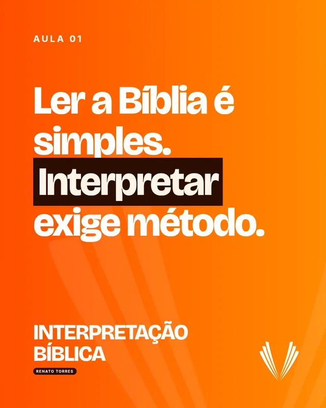
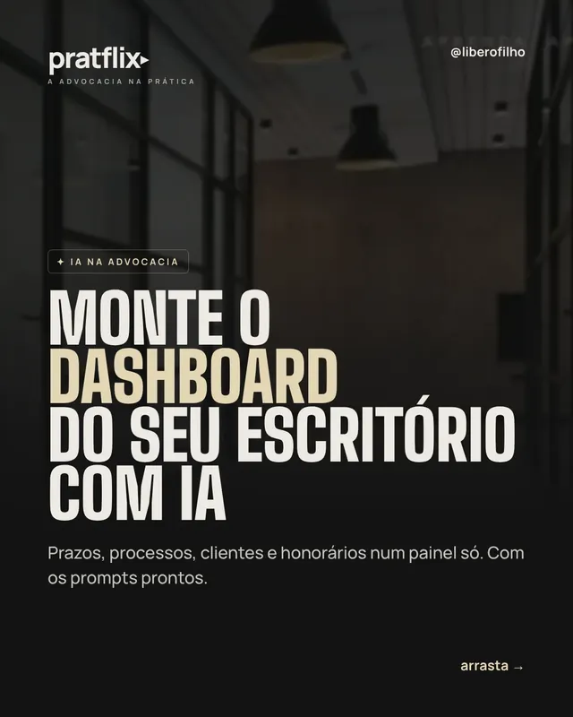
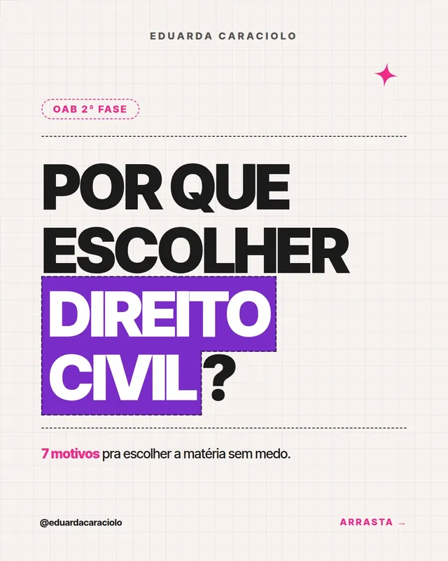
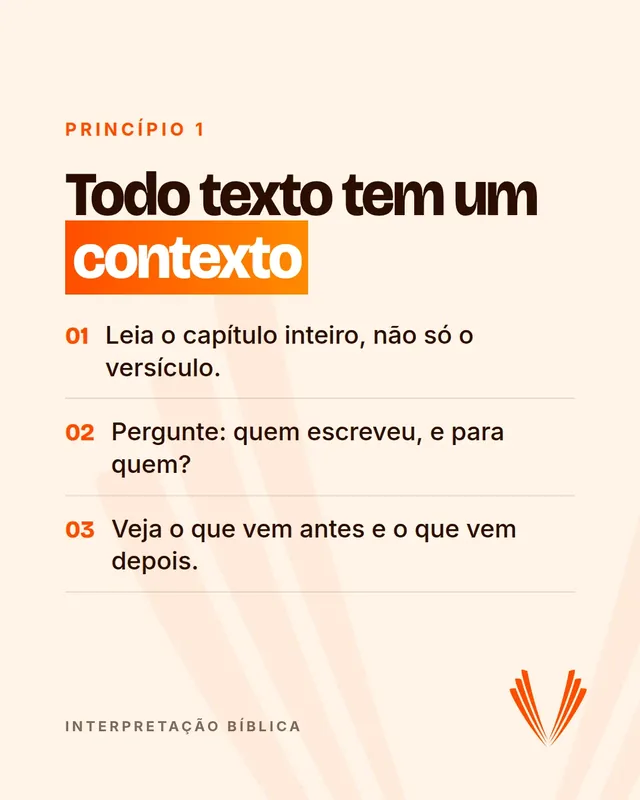
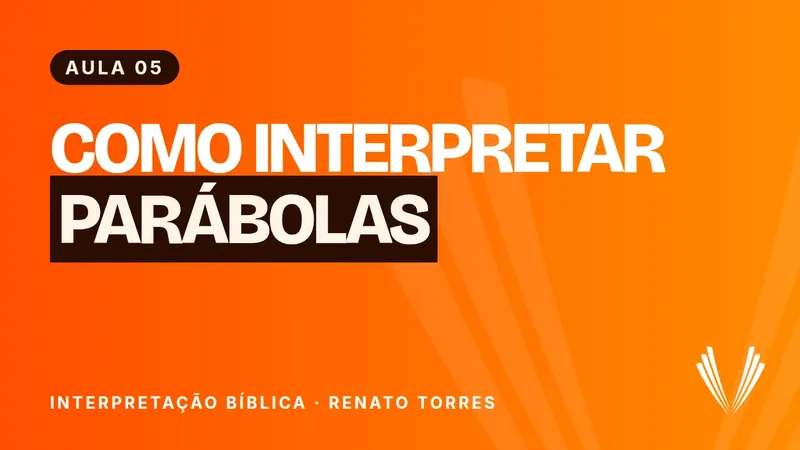

<title>PratFlix para Cartórios</title>
<meta name="claude:viewport-fit-sides" content="cover">
<meta name="description" content="Comunicação, conteúdo e capacitação para cartórios. Posts, vídeos, páginas e treinamentos, com aprovação da serventia em cada etapa.">
<link rel="preconnect" href="https://fonts.googleapis.com">
<link rel="preconnect" href="https://fonts.gstatic.com" crossorigin>
<link rel="stylesheet" href="https://fonts.googleapis.com/css2?family=Instrument+Serif:ital@0;1&family=Poppins:wght@400;500;600;700&display=swap">
<style>
/* Layout: editorial em papel claro, como um caderno de balcão bem organizado. Títulos grandes em Poppins com
   a virada da frase em serifa itálica; blocos grafite da PratFlix marcam os momentos de prova (trabalho real,
   planos, proposta). Movimento ligado à rolagem: cartões que se empilham, vídeo que cresce, linha do processo
   que se desenha. Visual fixo (não muda com o tema do sistema). */
:root {
  --papel: #F6F2EA; --papel-2: #EDE6D7; --cartao: #FCFAF5; --linha: #DED6C5;
  --tinta: #1A1916; --suave: #686254; --grafite: #141412; --grafite-2: #1F1E1A; --grafite-3: #2A2823; --linha-esc: #383530;
  --areia: #E3D6B4; --latao: #9A7C3F; --latao-claro: #CDB27A; --claro: #F2EDE1; --claro-suave: #AAA293;
  --serif: 'Instrument Serif', 'Times New Roman', Georgia, serif;
  --sans: 'Poppins', system-ui, -apple-system, 'Segoe UI', sans-serif;
  --curva: cubic-bezier(.2, .7, .2, 1);
  color-scheme: light;
}
* { box-sizing: border-box }
html { scroll-behavior: smooth; scroll-padding-top: 88px }
body { margin: 0; background: var(--papel); color: var(--tinta); font-family: var(--sans); font-size: 16px; line-height: 1.65; -webkit-font-smoothing: antialiased; overflow-x: hidden }
body::before { content: ""; position: fixed; inset: 0 0 auto; height: env(safe-area-inset-top, 0px); z-index: 60; background: var(--papel) }
img, video { max-width: 100%; display: block }
a { color: inherit }
button, input, select, textarea { font: inherit; color: inherit }
:focus-visible { outline: 2.5px solid var(--latao); outline-offset: 3px; border-radius: 6px }
p { margin: 0 }
.miolo { width: 100%; max-width: 1200px; margin: 0 auto; padding-left: max(18px, env(safe-area-inset-left, 0px)); padding-right: max(18px, env(safe-area-inset-right, 0px)) }
@media (min-width: 760px) { .miolo { padding-left: max(40px, env(safe-area-inset-left, 0px)); padding-right: max(40px, env(safe-area-inset-right, 0px)) } }
.secao { padding-block: clamp(72px, 10vw, 140px) }
.escuro { background: var(--grafite); color: var(--claro); color-scheme: dark }

/* tipografia */
.olho { font-size: 11.5px; font-weight: 600; letter-spacing: .2em; text-transform: uppercase; color: var(--latao) }
.escuro .olho { color: var(--latao-claro) }
h1, h2, h3 { margin: 0; font-weight: 600; letter-spacing: -.035em; line-height: 1.02; text-wrap: balance }
h1 { font-size: clamp(40px, 5.6vw, 80px); letter-spacing: -.045em }
@media (min-width: 1000px) { .linha-m { white-space: nowrap } h1 { font-size: clamp(48px, 4.9vw, 76px) } }
h2 { font-size: clamp(34px, 4.6vw, 62px) }
h3 { font-size: clamp(22px, 2.1vw, 28px); letter-spacing: -.025em; line-height: 1.12 }
em, .it { font-family: var(--serif); font-style: italic; font-weight: 400; letter-spacing: -.01em }
h1 em, h2 em { color: var(--latao); padding-right: .04em }
.escuro h1 em, .escuro h2 em { color: var(--areia) }
.lead { font-size: clamp(16.5px, 1.45vw, 19px); color: var(--suave); max-width: 58ch; line-height: 1.65 }
.escuro .lead { color: var(--claro-suave) }
.pequeno { font-size: 13px; color: var(--suave) }
.escuro .pequeno { color: var(--claro-suave) }
.cab { display: grid; gap: 18px; align-content: start; max-width: 820px; margin-bottom: clamp(40px, 5vw, 64px) }
.cab.lado { max-width: none; grid-template-columns: 1fr; align-items: end }
@media (min-width: 960px) { .cab.lado { grid-template-columns: 1.1fr .9fr; gap: 48px } }

/* botões */
.botoes { display: flex; flex-wrap: wrap; gap: 12px; align-items: center }
.btn { position: relative; display: inline-flex; align-items: center; gap: 12px; min-height: 52px; padding: 0 26px; border-radius: 999px; border: 1.5px solid transparent; font-weight: 600; font-size: 15px; text-decoration: none; cursor: pointer; transition: background .25s, color .25s, border-color .25s; overflow: hidden; isolation: isolate }
.btn .seta { display: inline-grid; place-items: center; width: 26px; height: 26px; border-radius: 50%; transition: transform .35s var(--curva) }
.btn:hover .seta { transform: translateX(4px) rotate(-45deg) }
.btn.cheio { background: var(--grafite); color: var(--papel) }
.btn.cheio .seta { background: var(--areia); color: var(--grafite) }
.btn.cheio::before { content: ""; position: absolute; inset: 0; z-index: -1; background: var(--latao); transform: translateY(101%); transition: transform .45s var(--curva) }
.btn.cheio:hover::before { transform: none }
.escuro .btn.cheio, .btn.areia { background: var(--areia); color: var(--grafite) }
.escuro .btn.cheio .seta, .btn.areia .seta { background: var(--grafite); color: var(--areia) }
.escuro .btn.cheio::before, .btn.areia::before { background: #F1E7CB }
.btn.texto { padding: 0 4px; min-height: 44px; border-radius: 4px; background: none; border: 0; text-decoration: underline; text-decoration-color: var(--latao); text-underline-offset: 6px; text-decoration-thickness: 1.5px }
.btn.linha { border-color: var(--linha) }
.btn.linha:hover { border-color: var(--tinta) }
.escuro .btn.linha { border-color: var(--linha-esc); color: var(--claro) }
.escuro .btn.linha:hover { border-color: var(--areia) }

/* revelação na rolagem: só movimento, o conteúdo fica visível desde o início */
.mov .rv { transform: translateY(34px); transition: transform 1.1s var(--curva) }
.mov .rv.in { transform: none }

/* topo */
.topo { position: sticky; top: env(safe-area-inset-top, 0px); z-index: 50; transition: background .3s, box-shadow .3s }
.topo.rolou { background: rgba(246,242,234,.88); backdrop-filter: blur(14px); -webkit-backdrop-filter: blur(14px); box-shadow: 0 1px 0 var(--linha) }
.topo .miolo { display: flex; align-items: center; justify-content: space-between; gap: 18px; min-height: 72px }
.logo { display: flex; align-items: center; gap: 12px; text-decoration: none }
.logo b { font-weight: 700; font-size: 21px; letter-spacing: -.04em; display: inline-flex; align-items: center; gap: 3px }
.logo b i { width: 0; height: 0; border-left: 8px solid var(--latao); border-top: 5px solid transparent; border-bottom: 5px solid transparent }
.logo span { font-family: var(--serif); font-style: italic; font-size: 17px; color: var(--suave); border-left: 1px solid var(--linha); padding-left: 12px }
.nav { display: none; gap: 30px; font-size: 14px }
.nav a { text-decoration: none; color: var(--suave); position: relative }
.nav a::after { content: ""; position: absolute; left: 0; right: 0; bottom: -4px; height: 1.5px; background: var(--latao); transform: scaleX(0); transform-origin: right; transition: transform .35s var(--curva) }
.nav a:hover { color: var(--tinta) }
.nav a:hover::after { transform: scaleX(1); transform-origin: left }
.topo .btn { min-height: 44px; padding: 0 8px 0 20px; font-size: 14px }
.topo .btn .seta { width: 30px; height: 30px }
@media (min-width: 1020px) { .nav { display: flex } }
@media (max-width: 460px) { .logo span { display: none } }

/* hero */
.hero { position: relative; padding-block: clamp(36px, 6vw, 80px) clamp(56px, 7vw, 100px); overflow: hidden }
.hero .miolo { display: grid; gap: 56px; align-items: center }
@media (min-width: 1000px) { .hero .miolo { grid-template-columns: 1.02fr .98fr; gap: 40px } }
.hero-txt { display: grid; gap: 28px; min-width: 0 }
.linha-m { display: block; overflow: hidden; padding-bottom: .06em; margin-bottom: -.06em }
.linha-m > span { display: inline-block }
.mov .linha-m > span { animation: sobe 1.1s var(--curva) both }
.mov .linha-m:nth-child(2) > span { animation-delay: .08s } .mov .linha-m:nth-child(3) > span { animation-delay: .16s } .mov .linha-m:nth-child(4) > span { animation-delay: .24s }
@keyframes sobe { from { transform: translateY(105%) } }
.mov .entra { animation: entra 1s var(--curva) .35s both }
@keyframes entra { from { transform: translateY(18px) } }
.provas { display: grid; gap: 10px; border-top: 1px solid var(--linha); padding-top: 22px; font-size: 13.5px; color: var(--suave) }
@media (min-width: 640px) { .provas { grid-template-columns: repeat(3, 1fr); gap: 18px } }
.provas b { display: block; color: var(--tinta); font-weight: 600; font-size: 14px }

/* palco do hero: pilha de trabalhos reais */
.palco { position: relative; aspect-ratio: 1 / .92; min-width: 0; perspective: 1400px }
.peca { position: absolute; border-radius: 14px; overflow: hidden; background: var(--grafite); box-shadow: 0 30px 60px -28px rgba(30,25,15,.55), 0 0 0 1px rgba(0,0,0,.06); transition: transform .9s var(--curva); will-change: transform }
.peca img, .peca video { width: 100%; height: 100%; object-fit: cover }
.p-telao { left: 0; top: 4%; width: 84%; aspect-ratio: 16 / 9; transform: translate3d(calc(var(--px, 0) * -10px), calc(var(--py, 0) * -8px), 0) rotate(-1.5deg) }
.p-post1 { right: 0; top: 38%; width: 34%; aspect-ratio: 4 / 5; transform: translate3d(calc(var(--px, 0) * 16px), calc(var(--py, 0) * 12px), 0) rotate(3deg) }
.p-post2 { left: 14%; bottom: 0; width: 30%; aspect-ratio: 4 / 5; transform: translate3d(calc(var(--px, 0) * 8px), calc(var(--py, 0) * 14px), 0) rotate(-4deg) }
.p-post3 { left: 47%; bottom: 3%; width: 26%; aspect-ratio: 4 / 5; transform: translate3d(calc(var(--px, 0) * 20px), calc(var(--py, 0) * 6px), 0) rotate(2deg) }
.mov .peca { animation: pousa 1.3s var(--curva) both }
.mov .p-post1 { animation-delay: .25s } .mov .p-post2 { animation-delay: .4s } .mov .p-post3 { animation-delay: .55s }
@keyframes pousa { from { translate: 0 60px; rotate: 6deg } }
.etiqueta { position: absolute; z-index: 3; display: inline-flex; align-items: center; gap: 8px; font-size: 11px; font-weight: 600; letter-spacing: .08em; background: var(--cartao); color: var(--tinta); padding: 8px 14px; border-radius: 999px; box-shadow: 0 12px 30px -14px rgba(30,25,15,.5) }
.etiqueta i { width: 7px; height: 7px; border-radius: 50%; background: #D9472B; animation: pulso 1.8s ease-out infinite }
@keyframes pulso { 0% { box-shadow: 0 0 0 0 rgba(217,71,43,.55) } 70%, 100% { box-shadow: 0 0 0 9px rgba(217,71,43,0) } }
.e1 { left: 3%; top: 0 }
.e2 { right: 2%; top: 31%; background: var(--grafite); color: var(--areia) }
.legenda-palco { position: absolute; left: 0; bottom: -40px; font-size: 12.5px; color: var(--suave) }
.legenda-palco .it { font-size: 15px; color: var(--tinta) }
.som { position: absolute; z-index: 3; right: 18%; top: 6%; min-height: 34px; padding: 0 12px; border-radius: 999px; border: 0; background: rgba(20,20,18,.72); color: #fff; font-size: 11.5px; cursor: pointer; backdrop-filter: blur(6px) }

/* faixa de dúvidas */
.faixa-duvidas { border-block: 1px solid var(--linha); overflow: hidden; padding-block: 22px; background: var(--papel) }
.trilho-d { display: flex; gap: 48px; width: max-content; animation: corre 70s linear infinite; font-family: var(--serif); font-style: italic; font-size: clamp(24px, 2.6vw, 34px); color: var(--tinta); white-space: nowrap }
.trilho-d span { display: inline-flex; align-items: center; gap: 48px }
.trilho-d span::after { content: ""; width: 9px; height: 9px; border-radius: 50%; background: var(--latao) }
.faixa-duvidas:hover .trilho-d { animation-play-state: paused }
@keyframes corre { to { transform: translateX(-50%) } }

/* manifesto */
.manifesto { display: grid; gap: 40px }
@media (min-width: 960px) { .manifesto { grid-template-columns: .9fr 1.1fr; gap: 80px; align-items: start } }
.grande { font-size: clamp(26px, 2.9vw, 40px); line-height: 1.22; letter-spacing: -.03em; font-weight: 500; color: var(--tinta) }
.grande .apaga { color: #B9B1A0; transition: color .5s }
.grande .apaga.acende { color: var(--tinta) }
.colunas-txt { display: grid; gap: 18px; color: var(--suave); font-size: 16.5px; max-width: 58ch }

/* cartões empilhados (modalidades) */
.pilha { display: grid; gap: 24px; padding-bottom: 40px }
.modal { position: sticky; top: calc(96px + var(--i) * 22px + env(safe-area-inset-top, 0px)); border-radius: 26px; padding: clamp(24px, 3.4vw, 46px); display: grid; gap: 28px; min-height: min(520px, 76vh); transform-origin: 50% 0; box-shadow: 0 -18px 40px -30px rgba(30,25,15,.4); overflow: hidden }
@media (min-width: 900px) { .modal { grid-template-columns: 1fr 1fr; gap: 48px; align-items: center } }
@media (max-width: 899px), (max-height: 640px) { .modal { position: relative; top: auto; min-height: 0 } }
.modal.m1 { background: var(--cartao); border: 1px solid var(--linha) }
.modal.m2 { background: var(--grafite); color: var(--claro) }
.modal.m3 { background: var(--areia); color: var(--grafite) }
.modal .num { font-family: var(--serif); font-style: italic; font-size: 20px; color: var(--latao) }
.modal.m2 .num { color: var(--latao-claro) }
.modal h3 { font-size: clamp(30px, 3.6vw, 48px); letter-spacing: -.04em; line-height: 1.02 }
.modal .txt { display: grid; gap: 20px; align-content: start; min-width: 0 }
.modal p { color: var(--suave); font-size: 16px; max-width: 46ch }
.modal.m2 p { color: var(--claro-suave) }
.modal.m3 p { color: #5D5240 }
.modal ul { list-style: none; margin: 0; padding: 0; display: grid; gap: 10px; font-size: 15px }
.modal li { display: grid; grid-template-columns: 22px 1fr; gap: 6px }
.modal li::before { content: "→"; color: var(--latao) }
.modal.m2 li::before { color: var(--areia) }
.modal .vis { position: relative; min-width: 0; height: 100%; min-height: 260px; border-radius: 16px; overflow: hidden }
.modal .vis img { width: 100%; height: 100%; object-fit: cover; position: absolute; inset: 0 }
.vis.duplo img:first-child { width: 58%; left: 0; height: 88%; top: 6%; border-radius: 12px; box-shadow: 0 20px 40px -20px rgba(0,0,0,.5) }
.vis.duplo img:last-child { width: 50%; left: auto; right: 0; height: 76%; top: 18%; border-radius: 12px; box-shadow: 0 20px 40px -20px rgba(0,0,0,.6) }
.vis.cal { background: rgba(20,20,18,.06); display: grid; grid-template-columns: repeat(4, 1fr); gap: 8px; padding: 16px; align-content: center }
.vis.cal div { aspect-ratio: 1; border-radius: 10px; background: var(--grafite-3); display: grid; place-items: end start; padding: 8px; font-size: 10px; color: var(--claro-suave) }
.vis.cal div.p { background: var(--areia); color: var(--grafite); font-weight: 600 }
.vis.cal div.v { background: #fff; color: var(--grafite); font-weight: 600 }

/* situações */
.situacoes { display: grid; gap: 28px }
@media (min-width: 980px) { .situacoes { grid-template-columns: 1fr 1fr; gap: 56px; align-items: start } }
.lista-sit { list-style: none; margin: 0; padding: 0; border-top: 1px solid var(--linha) }
.lista-sit button { width: 100%; text-align: left; display: flex; justify-content: space-between; gap: 18px; align-items: center; background: none; border: 0; border-bottom: 1px solid var(--linha); padding: 16px 4px; cursor: pointer; font-size: clamp(16px, 1.4vw, 18px); color: var(--suave); transition: color .25s, padding .35s var(--curva); min-height: 56px }
.lista-sit button::after { content: "↗"; color: var(--latao); opacity: 0; transition: opacity .25s }
.lista-sit button:hover, .lista-sit button[aria-pressed="true"] { color: var(--tinta); padding-left: 14px }
.lista-sit button[aria-pressed="true"]::after, .lista-sit button:hover::after { opacity: 1 }
.lista-sit button[aria-pressed="true"] { font-weight: 500 }
.resp { position: sticky; top: 110px; border-radius: 22px; background: var(--grafite); color: var(--claro); padding: clamp(24px, 3vw, 36px); display: grid; gap: 18px }
.resp .fala { font-family: var(--serif); font-style: italic; font-size: clamp(26px, 2.6vw, 34px); line-height: 1.15; color: #fff }
.resp ul { margin: 0; padding: 0; list-style: none; display: grid; gap: 10px; color: var(--claro) }
.resp li { display: grid; grid-template-columns: 22px 1fr; gap: 4px }
.resp li::before { content: "✓"; color: var(--areia) }
.resp .troca { animation: troca .6s var(--curva) }
@keyframes troca { from { transform: translateY(10px); opacity: .2 } }

/* caso ANOREG */
.caso-topo { display: grid; gap: 22px; margin-bottom: 44px }
@media (min-width: 960px) { .caso-topo { grid-template-columns: 1.1fr .9fr; gap: 64px; align-items: end } }
.cinema { position: relative; border-radius: calc(32px - var(--p, 0) * 14px); overflow: hidden; transform: scale(calc(.86 + var(--p, 0) * .14)); transform-origin: 50% 30%; background: #0a1d36; box-shadow: 0 50px 100px -50px rgba(0,0,0,.9) }
.cinema video { width: 100%; aspect-ratio: 16 / 9; object-fit: cover }
.cinema .etiqueta { left: 20px; top: 20px; background: rgba(10,10,10,.6); color: #fff; backdrop-filter: blur(8px) }
.entregas { display: grid; gap: 0; margin-top: 56px; border-top: 1px solid var(--linha-esc) }
@media (min-width: 900px) { .entregas { grid-template-columns: repeat(5, 1fr); border-top: 0 } }
.entrega { padding: 22px 18px 22px 0; border-bottom: 1px solid var(--linha-esc); display: grid; gap: 8px; align-content: start }
@media (min-width: 900px) { .entrega { border-bottom: 0; border-top: 1px solid var(--linha-esc); position: relative } .entrega::before { content: ""; position: absolute; left: 0; top: -1px; height: 1px; width: 0; background: var(--areia); transition: width 1.2s var(--curva) } .entregas.in .entrega::before { width: 100% } .entregas.in .entrega:nth-child(2)::before { transition-delay: .12s } .entregas.in .entrega:nth-child(3)::before { transition-delay: .24s } .entregas.in .entrega:nth-child(4)::before { transition-delay: .36s } .entregas.in .entrega:nth-child(5)::before { transition-delay: .48s } }
.entrega .it { font-size: 20px; color: var(--areia) }
.entrega b { font-weight: 600; color: #fff; font-size: 15.5px }
.entrega span { font-size: 13.5px; color: var(--claro-suave) }
.galeria-caso { display: grid; gap: 14px; grid-template-columns: repeat(12, 1fr); margin-top: 44px }
.galeria-caso button { grid-column: span 12; padding: 0; border: 0; background: none; border-radius: 14px; overflow: hidden; cursor: zoom-in; position: relative }
@media (min-width: 760px) { .galeria-caso .g1, .galeria-caso .g2, .galeria-caso .g4 { grid-column: span 4 } .galeria-caso .g3 { grid-column: span 4; grid-row: span 2 } .galeria-caso .g4 { grid-column: span 8 } }
.galeria-caso img { width: 100%; height: 100%; object-fit: cover; transition: transform .8s var(--curva) }
.galeria-caso button:hover img { transform: scale(1.04) }
.nota-caso { margin-top: 28px; font-size: 13.5px; color: var(--claro-suave); display: flex; gap: 12px; max-width: 70ch }
.nota-caso::before { content: ""; flex: none; width: 2px; background: var(--latao) }

/* portfólio */
.projetos { display: grid; gap: clamp(56px, 7vw, 96px) }
.projeto { display: grid; gap: 28px }
@media (min-width: 960px) { .projeto { grid-template-columns: .8fr 1.2fr; gap: 56px; align-items: center } .projeto:nth-child(even) .proj-txt { order: 2 } }
.proj-txt { display: grid; gap: 16px; align-content: start; min-width: 0 }
.proj-txt h3 { font-size: clamp(26px, 2.8vw, 38px); letter-spacing: -.04em }
.proj-txt p { color: var(--suave) }
.tags { display: flex; flex-wrap: wrap; gap: 6px }
.tags span { font-size: 12.5px; padding: 5px 11px; border-radius: 999px; border: 1px solid var(--linha); color: var(--suave) }
.selo { justify-self: start; font-size: 11px; font-weight: 600; letter-spacing: .14em; text-transform: uppercase; color: var(--latao) }
.vitrine { position: relative; display: flex; gap: 14px; overflow-x: auto; scroll-snap-type: x mandatory; padding: 6px 2px 14px; scrollbar-width: thin; scrollbar-color: var(--linha) transparent; cursor: grab; min-width: 0 }
.vitrine.arrasta { cursor: grabbing; scroll-snap-type: none }
.vitrine button { flex: none; scroll-snap-align: start; padding: 0; border: 0; background: none; border-radius: 12px; overflow: hidden; cursor: zoom-in; box-shadow: 0 18px 36px -24px rgba(30,25,15,.6); transition: transform .5s var(--curva) }
.vitrine button:hover { transform: translateY(-6px) }
.vitrine img { height: 300px; width: auto; pointer-events: none }
@media (max-width: 600px) { .vitrine img { height: 230px } }

/* lupa */
dialog.lupa { border: 0; padding: 0; background: transparent; max-width: min(1100px, 94vw); max-height: 92vh; color: var(--claro) }
dialog.lupa::backdrop { background: rgba(14,13,11,.9); backdrop-filter: blur(6px) }
dialog.lupa[open] .lupa-corpo { animation: abre .5s var(--curva) }
@keyframes abre { from { transform: scale(.94) } }
.lupa-corpo { display: grid; gap: 12px; justify-items: center }
.lupa img { max-height: 80vh; width: auto; border-radius: 12px }
.lupa p { font-size: 14px; color: var(--claro-suave); text-align: center }
.lupa-fechar { position: fixed; top: calc(16px + env(safe-area-inset-top, 0px)); right: max(16px, env(safe-area-inset-right, 0px)); min-height: 44px; border-radius: 999px; border: 1px solid #555; background: #111; color: #fff; padding: 0 18px; cursor: pointer }

/* serviços */
.servicos { display: grid; border-top: 1px solid var(--linha) }
.servico { display: grid; gap: 14px; padding: 28px 0; border-bottom: 1px solid var(--linha); transition: padding .4s var(--curva) }
@media (min-width: 900px) { .servico { grid-template-columns: 70px 1fr 1.2fr; gap: 28px; align-items: start } .servico:hover { padding-left: 14px } }
.servico .n { font-family: var(--serif); font-style: italic; font-size: 26px; color: var(--latao); line-height: 1 }
.servico h3 { font-size: clamp(22px, 2.2vw, 30px) }
.servico .marca { font-size: 11px; font-weight: 600; letter-spacing: .14em; text-transform: uppercase; color: var(--latao); display: block; margin-top: 8px }
.servico p { color: var(--suave); font-size: 15.5px }
.servico .itens { display: flex; flex-wrap: wrap; gap: 6px; margin-top: 12px }
.servico .itens span { font-size: 13px; padding: 4px 10px; border-radius: 6px; background: var(--papel-2); color: var(--suave) }
.servico .obs { font-size: 13px; color: var(--suave); margin-top: 12px; font-style: italic; font-family: var(--serif); font-size: 16.5px }

/* atribuições */
.abas { display: flex; gap: 4px; overflow-x: auto; padding: 4px; margin-bottom: 30px; border-radius: 999px; background: var(--papel-2); width: max-content; max-width: 100%; scrollbar-width: none }
.abas button { flex: none; border: 0; background: transparent; border-radius: 999px; padding: 10px 18px; font-size: 14px; cursor: pointer; min-height: 44px; white-space: nowrap; color: var(--suave); transition: background .3s, color .3s }
.abas button[aria-selected="true"] { background: var(--grafite); color: var(--papel) }
.painel-atr { display: grid; gap: 30px }
@media (min-width: 960px) { .painel-atr { grid-template-columns: .8fr 1.2fr; align-items: start } }
.linhas ul { margin: 0; padding: 0; list-style: none; border-top: 1px solid var(--linha) }
.linhas li { padding: 13px 0; border-bottom: 1px solid var(--linha); font-size: 15.5px; display: flex; gap: 12px }
.linhas li::before { content: "—"; color: var(--latao) }
.pautas { display: grid; gap: 12px; grid-template-columns: repeat(auto-fit, minmax(180px, 1fr)) }
.pauta { aspect-ratio: 4 / 5; border-radius: 16px; padding: 18px; display: flex; flex-direction: column; justify-content: space-between; position: relative; overflow: hidden; background: var(--grafite); color: var(--claro); transition: transform .5s var(--curva) }
.pauta:hover { transform: translateY(-6px) rotate(-1deg) }
.pauta:nth-child(2) { background: var(--areia); color: var(--grafite) }
.pauta:nth-child(3) { background: var(--cartao); color: var(--tinta); border: 1px solid var(--linha) }
.pauta small { font-size: 10.5px; letter-spacing: .16em; text-transform: uppercase; font-weight: 600; opacity: .7 }
.pauta strong { font-family: var(--serif); font-style: italic; font-weight: 400; font-size: 30px; line-height: 1.02 }
.pauta span { font-size: 12px; opacity: .75 }
.painel-atr .troca { animation: troca .6s var(--curva) }

/* planos */
.alterna { position: relative; display: inline-flex; gap: 0; padding: 4px; border-radius: 999px; background: var(--grafite-3); margin-bottom: 32px; max-width: 100%; overflow-x: auto }
.alterna button { position: relative; z-index: 1; border: 0; background: transparent; color: var(--claro-suave); border-radius: 999px; padding: 10px 18px; cursor: pointer; font-size: 14px; font-weight: 500; min-height: 44px; white-space: nowrap; transition: color .3s }
.alterna button[aria-selected="true"] { color: var(--grafite) }
.alterna .bola { position: absolute; z-index: 0; top: 4px; bottom: 4px; border-radius: 999px; background: var(--areia); transition: left .45s var(--curva), width .45s var(--curva) }
.planos { display: grid; gap: 14px }
@media (min-width: 880px) { .planos { grid-template-columns: repeat(3, 1fr) } }
.plano { display: grid; gap: 18px; align-content: start; padding: 30px; border-radius: 22px; background: var(--grafite-2); border: 1px solid var(--linha-esc); min-width: 0; transition: transform .5s var(--curva), border-color .3s }
.plano:hover { transform: translateY(-6px); border-color: #4A463E }
.plano.meio { background: var(--areia); color: var(--grafite); border-color: var(--areia) }
.plano .nome { font-family: var(--serif); font-style: italic; font-size: 36px; line-height: 1 }
.plano .para { font-size: 14px; color: var(--claro-suave) }
.plano.meio .para { color: #5D5240 }
.plano .valor { font-variant-numeric: tabular-nums; display: flex; align-items: baseline; gap: 6px; flex-wrap: wrap }
.plano .valor b { font-size: 36px; font-weight: 600; letter-spacing: -.04em }
.plano .valor small { font-size: 13.5px; opacity: .75 }
.plano .ref { font-size: 10.5px; letter-spacing: .16em; text-transform: uppercase; font-weight: 600; color: var(--latao-claro) }
.plano.meio .ref { color: #7A6638 }
.plano ul { margin: 0; padding: 0; list-style: none; display: grid; gap: 9px; font-size: 14.5px; border-top: 1px solid var(--linha-esc); padding-top: 18px }
.plano.meio ul { border-color: rgba(20,20,18,.15) }
.plano li { display: grid; grid-template-columns: 20px 1fr; gap: 6px }
.plano li::before { content: "✓"; color: var(--areia) }
.plano.meio li::before { color: var(--grafite) }
.plano .btn { justify-content: space-between; padding: 0 8px 0 22px }
.plano.meio .btn.cheio { background: var(--grafite); color: var(--areia) }
.plano.meio .btn.cheio .seta { background: var(--areia); color: var(--grafite) }
.planos .troca { animation: troca .6s var(--curva) both }
.nota-planos { margin-top: 24px; display: grid; gap: 8px; font-size: 13.5px; color: var(--claro-suave); max-width: 80ch }
.mes { margin-top: clamp(56px, 7vw, 88px); display: grid; gap: 22px }
.mes-grade { display: grid; gap: 10px }
@media (min-width: 860px) { .mes-grade { grid-template-columns: repeat(4, 1fr) } }
.semana { border-radius: 18px; border: 1px solid var(--linha-esc); padding: 18px; display: grid; gap: 8px; align-content: start }
.semana .it { font-size: 22px; color: var(--areia) }
.item-cal { display: grid; gap: 1px; padding: 10px 12px; border-radius: 10px; background: var(--grafite-3); font-size: 13.5px; line-height: 1.35 }
.item-cal small { font-size: 10px; letter-spacing: .16em; text-transform: uppercase; font-weight: 600; color: var(--latao-claro) }
.item-cal.video { background: var(--areia); color: var(--grafite) }
.item-cal.video small { color: #7A6638 }

/* montador */
.montador { display: grid; gap: 20px }
@media (min-width: 1000px) { .montador { grid-template-columns: 1.4fr .6fr; align-items: start } }
.caixa { border-radius: 26px; background: var(--cartao); border: 1px solid var(--linha); padding: clamp(22px, 3.2vw, 40px); min-width: 0 }
.barra { height: 3px; border-radius: 3px; background: var(--linha); overflow: hidden; margin-bottom: 18px }
.barra i { display: block; height: 100%; width: 12%; background: var(--grafite); transition: width .6s var(--curva) }
.etapa { display: grid; gap: 18px }
.etapa[hidden] { display: none }
.etapa.troca { animation: troca .55s var(--curva) }
.etapa legend, .etapa .pergunta { font-size: clamp(26px, 2.8vw, 36px); font-weight: 600; letter-spacing: -.035em; line-height: 1.08; padding: 0 }
.etapa fieldset { border: 0; margin: 0; padding: 0; display: grid; gap: 16px; min-width: 0 }
.ajuda { font-size: 14.5px; color: var(--suave); margin-top: -6px }
.opcoes { display: grid; gap: 10px; grid-template-columns: repeat(auto-fit, minmax(200px, 1fr)) }
.opcao { position: relative; display: block; cursor: pointer }
.opcao input { position: absolute; opacity: 0; pointer-events: none }
.opcao span { display: grid; gap: 2px; padding: 14px 16px; border-radius: 14px; border: 1.5px solid var(--linha); background: #fff; min-height: 56px; transition: border-color .2s, background .2s, transform .25s var(--curva); font-size: 15px; font-weight: 500 }
.opcao span small { font-weight: 400; color: var(--suave); font-size: 13px }
.opcao:hover span { border-color: var(--suave) }
.opcao input:checked + span { border-color: var(--grafite); background: var(--grafite); color: var(--areia); transform: scale(.985) }
.opcao input:checked + span small { color: var(--claro-suave) }
.opcao input:focus-visible + span { outline: 2.5px solid var(--latao); outline-offset: 2px }
.campos { display: grid; gap: 14px; grid-template-columns: repeat(auto-fit, minmax(220px, 1fr)) }
.campo { display: grid; gap: 6px; font-size: 14px; font-weight: 500 }
.campo input, .campo select, .campo textarea { width: 100%; min-height: 52px; border-radius: 12px; border: 1.5px solid var(--linha); background: #fff; padding: 12px 14px; font-size: 16px; color: var(--tinta); transition: border-color .2s }
.campo textarea { min-height: 96px; resize: vertical }
.campo input:focus, .campo select:focus, .campo textarea:focus { outline: none; border-color: var(--grafite) }
.sub { display: grid; gap: 10px; padding: 16px; border-radius: 14px; background: var(--papel-2) }
.sub h4 { margin: 0; font-size: 15px; font-weight: 600 }
.erro { color: #9A2A1C; font-size: 14px; font-weight: 500 }
.navegar { display: flex; justify-content: space-between; gap: 10px; margin-top: 26px; flex-wrap: wrap }
.resumo { border-radius: 26px; background: var(--grafite); color: var(--claro); padding: 28px; display: grid; gap: 16px; position: sticky; top: calc(96px + env(safe-area-inset-top, 0px)); min-width: 0 }
.resumo .it { font-size: 30px; color: var(--areia); line-height: 1 }
.resumo dl { margin: 0; display: grid; gap: 10px }
.resumo dt { font-size: 10.5px; letter-spacing: .16em; text-transform: uppercase; color: var(--latao-claro); font-weight: 600 }
.resumo dd { margin: 0; font-size: 14px; overflow-wrap: anywhere }
.resumo dd.vazio { color: #6F6A5F }
.estimativa { border-top: 1px solid var(--linha-esc); padding-top: 14px; display: grid; gap: 6px; font-size: 13.5px }
.estimativa b { font-size: 24px; font-variant-numeric: tabular-nums; color: #fff; font-weight: 600; letter-spacing: -.03em }
.envio { display: grid; gap: 14px }
.envio pre { white-space: pre-wrap; overflow-wrap: anywhere; font-family: var(--sans); font-size: 13.5px; background: #fff; border: 1px solid var(--linha); border-radius: 12px; padding: 16px; margin: 0; max-height: 280px; overflow: auto }
.estado { font-size: 14px; font-weight: 500; padding: 12px 14px; border-radius: 12px; background: var(--papel-2) }

/* processo */
.processo { position: relative; display: grid; gap: 0; padding-left: 34px }
.processo::before { content: ""; position: absolute; left: 7px; top: 8px; bottom: 8px; width: 1.5px; background: var(--linha-esc) }
.processo .fio { position: absolute; left: 7px; top: 8px; width: 1.5px; height: calc((100% - 16px) * var(--p, 0)); background: var(--areia) }
.etapa-p { position: relative; padding: 0 0 34px; display: grid; gap: 6px; max-width: 60ch }
.etapa-p::before { content: ""; position: absolute; left: -34px; top: 6px; width: 16px; height: 16px; border-radius: 50%; background: var(--grafite); border: 1.5px solid var(--linha-esc); transition: background .4s, border-color .4s }
.etapa-p.ok::before { background: var(--areia); border-color: var(--areia) }
.etapa-p .it { font-size: 15px; color: var(--latao-claro) }
.etapa-p b { font-size: clamp(20px, 2vw, 26px); font-weight: 600; letter-spacing: -.03em; color: #fff }
.etapa-p span { color: var(--claro-suave); font-size: 15px }
.etapa-p.destaque b { color: var(--areia) }
.proc-grid { display: grid; gap: 48px }
@media (min-width: 960px) { .proc-grid { grid-template-columns: .9fr 1.1fr; gap: 80px } .proc-grid .cab { position: sticky; top: 120px; align-self: start } }

/* equipe */
.equipe { display: grid; gap: 14px }
@media (min-width: 900px) { .equipe { grid-template-columns: 1.5fr 1fr 1fr } }
.pessoa { border-radius: 22px; background: var(--cartao); border: 1px solid var(--linha); padding: 28px; display: grid; gap: 14px; align-content: start; min-width: 0 }
.pessoa.lider { background: var(--grafite); color: var(--claro); border-color: var(--grafite) }
.mono { width: 72px; height: 72px; border-radius: 50%; display: grid; place-items: center; font-family: var(--serif); font-style: italic; font-size: 38px; background: var(--areia); color: var(--grafite) }
.pessoa .funcao { font-size: 11px; letter-spacing: .14em; text-transform: uppercase; font-weight: 600; color: var(--latao) }
.pessoa.lider .funcao { color: var(--latao-claro) }
.pessoa p { font-size: 15px; color: var(--suave) }
.pessoa.lider p { color: var(--claro-suave) }

/* cursos */
.cursos { display: grid; gap: 20px }
@media (min-width: 1000px) { .cursos { grid-template-columns: 1fr 1fr; align-items: start } }
.bloco { border-radius: 26px; padding: clamp(24px, 3vw, 38px); display: grid; gap: 18px; min-width: 0 }
.bloco.claro { background: var(--cartao); border: 1px solid var(--linha) }
.bloco.esc { background: var(--grafite); color: var(--claro) }
.modulos { list-style: none; margin: 0; padding: 0; counter-reset: m; border-top: 1px solid var(--linha) }
.modulos li { counter-increment: m; display: grid; grid-template-columns: 40px 1fr; gap: 2px 10px; padding: 12px 0; border-bottom: 1px solid var(--linha) }
.modulos li::before { content: counter(m, decimal-leading-zero); grid-row: 1 / span 2; font-family: var(--serif); font-style: italic; font-size: 20px; color: var(--latao) }
.modulos b { font-weight: 600; font-size: 15px }
.modulos span { font-size: 13.5px; color: var(--suave) }
.selo-pill { justify-self: start; font-size: 11px; font-weight: 600; letter-spacing: .14em; text-transform: uppercase; padding: 6px 12px; border-radius: 999px; border: 1px solid var(--linha); color: var(--latao) }
.bloco.esc .selo-pill { border-color: var(--linha-esc); color: var(--latao-claro) }
.diag-q { display: grid; gap: 10px; padding-bottom: 14px; border-bottom: 1px solid var(--linha-esc) }
.diag-q p { font-size: 15px; color: #fff }
.diag-r { display: flex; flex-wrap: wrap; gap: 6px }
.diag-r button { border: 1.5px solid var(--linha-esc); background: transparent; color: var(--claro-suave); border-radius: 999px; padding: 7px 16px; cursor: pointer; font-size: 13.5px; min-height: 40px; transition: background .25s, color .25s, border-color .25s }
.diag-r button[aria-pressed="true"] { background: var(--areia); color: var(--grafite); border-color: var(--areia) }
.medidor { height: 4px; border-radius: 4px; background: var(--grafite-3); overflow: hidden }
.medidor i { display: block; height: 100%; width: 0; background: var(--areia); transition: width .6s var(--curva) }
.prioridades { display: grid; gap: 8px; padding: 18px; border-radius: 16px; background: var(--grafite-3); font-size: 14.5px }
.prioridades ol { margin: 0; padding-left: 20px; display: grid; gap: 6px }

/* faq */
.faq-grid { display: grid; gap: 40px }
@media (min-width: 960px) { .faq-grid { grid-template-columns: .7fr 1.3fr; gap: 80px } .faq-grid .cab { position: sticky; top: 120px; align-self: start } }
.faq { border-top: 1px solid var(--linha) }
.faq details { border-bottom: 1px solid var(--linha) }
.faq summary { cursor: pointer; list-style: none; display: flex; justify-content: space-between; gap: 18px; align-items: center; padding: 20px 0; font-weight: 500; font-size: 16.5px; min-height: 60px }
.faq summary::-webkit-details-marker { display: none }
.faq summary::after { content: ""; flex: none; width: 12px; height: 12px; border-right: 1.5px solid var(--latao); border-bottom: 1.5px solid var(--latao); transform: rotate(45deg) translate(-3px, -3px); transition: transform .35s var(--curva) }
.faq details[open] summary::after { transform: rotate(225deg) }
.faq .resposta-faq { display: grid; grid-template-rows: 0fr; transition: grid-template-rows .45s var(--curva) }
.faq details[open] .resposta-faq { grid-template-rows: 1fr }
.faq .resposta-faq > p { overflow: hidden; color: var(--suave); max-width: 66ch }
.faq details[open] .resposta-faq > p { padding-bottom: 22px }

/* final */
.final { position: relative; overflow: hidden }
.final .miolo { position: relative; z-index: 1; display: grid; gap: 30px; justify-items: start }
.final h2 { font-size: clamp(44px, 7.4vw, 108px); letter-spacing: -.05em; line-height: .98 }
.final canvas { position: absolute; inset: 0; width: 100%; height: 100%; z-index: 0; pointer-events: none }
.contatos { display: flex; flex-wrap: wrap; gap: 10px 26px; font-size: 14.5px; color: var(--claro-suave) }
.contatos a { color: var(--claro); text-decoration-color: var(--latao); text-underline-offset: 4px }
footer { background: #0D0D0C; color: #8B8475; font-size: 13px; padding-block: 28px calc(28px + env(safe-area-inset-bottom, 0px)) }
footer .miolo { display: flex; flex-wrap: wrap; justify-content: space-between; gap: 12px }

@media (prefers-reduced-motion: reduce) {
  *, *::before, *::after { animation: none !important; transition: none !important; scroll-behavior: auto !important }
  .mov .rv { transform: none }
  .cinema { transform: none; border-radius: 22px }
}
</style>

<header class="topo" id="topo">
  <div class="miolo">
    <a class="logo" href="#inicio" aria-label="PratFlix para Cartórios, início"><b>pratflix<i></i></b><span>para cartórios</span></a>
    <nav class="nav" aria-label="Seções"><a href="#trabalho">Trabalhos</a><a href="#servicos">Serviços</a><a href="#planos">Planos</a><a href="#equipe">Equipe</a><a href="#duvidas">Dúvidas</a></nav>
    <a class="btn cheio" href="#montador">Montar meu pacote <span class="seta" aria-hidden="true">→</span></a>
  </div>
</header>

<main id="inicio">

<section class="hero">
  <div class="miolo">
    <div class="hero-txt">
      <span class="olho entra">Comunicação para o extrajudicial</span>
      <h1 aria-label="Seu cartório tem muito a explicar. A gente ajuda a comunicar.">
        <span class="linha-m" aria-hidden="true"><span>Seu cartório tem</span></span>
        <span class="linha-m" aria-hidden="true"><span>muito a explicar.</span></span>
        <span class="linha-m" aria-hidden="true"><span><em>A gente ajuda</em></span></span>
        <span class="linha-m" aria-hidden="true"><span><em>a comunicar.</em></span></span>
      </h1>
      <p class="lead entra">Posts, vídeos, páginas e treinamentos feitos por quem conhece a rotina do balcão. Você contrata uma entrega avulsa ou uma equipe acompanhando o cartório todo mês. E nada vai ao ar sem a sua aprovação.</p>
      <div class="botoes entra">
        <a class="btn cheio ima" href="#montador">Montar meu pacote <span class="seta" aria-hidden="true">→</span></a>
        <a class="btn texto" href="#trabalho">Ver o que já fizemos</a>
      </div>
      <div class="provas entra">
        <span><b>ANOREG Conecta 2026</b>Peças da transmissão do evento</span>
        <span><b>Educação e cursos</b>Plataformas, aulas e materiais</span>
        <span><b>Vivência de cartório</b>A rotina vista por dentro</span>
      </div>
    </div>
    <div class="palco" id="palco" aria-label="Trabalhos reais da equipe">
      <span class="etiqueta e1"><i aria-hidden="true"></i>Vinheta · ANOREG Conecta</span>
      <div class="peca p-telao"><video id="reel" src="img/conecta-reel.mp4" poster="img/conecta-abertura.webp" autoplay muted loop playsinline preload="auto" aria-label="Vinheta animada que fizemos para a transmissão do ANOREG Conecta"></video></div>
      <div class="peca p-post1"></div>
      <div class="peca p-post2"></div>
      <div class="peca p-post3"></div>
      <span class="etiqueta e2">Trabalho real, não modelo</span>
      <button class="som" type="button" id="pausa" aria-pressed="false">Pausar vídeo</button>
      <p class="legenda-palco"><span class="it">Tudo aqui saiu da nossa produção.</span></p>
    </div>
  </div>
</section>

<div class="faixa-duvidas" aria-label="Dúvidas que chegam ao balcão">
  <div class="trilho-d" id="trilho-d"></div>
</div>

<section class="secao" id="por-que">
  <div class="miolo manifesto">
    <div class="cab rv" style="margin:0">
      <span class="olho">Por que comunicar</span>
      <h2>A melhor resposta chega <em>antes</em> da dúvida.</h2>
    </div>
    <div style="display:grid;gap:36px">
      <p class="grande" id="grande">Cada pergunta repetida no balcão é uma explicação que <span class="apaga">poderia estar num post fixado,</span> <span class="apaga">num vídeo de quarenta segundos,</span> <span class="apaga">num cartaz com QR code na recepção.</span> <span class="apaga">É isso que a gente produz.</span></p>
      <div class="colunas-txt rv">
        <p>A equipe do cartório já sabe explicar cada serviço. O que costuma faltar é tempo para transformar essa explicação em conteúdo, com regularidade e com o mesmo padrão visual.</p>
        <p>Nós organizamos essa produção: escrevemos, desenhamos, gravamos e editamos. A serventia revisa e aprova. O cidadão chega mais orientado, e a equipe ganha tempo para o atendimento.</p>
      </div>
    </div>
  </div>
</section>

<section class="secao" id="modalidades" style="padding-top:0">
  <div class="miolo">
    <div class="cab rv">
      <span class="olho">Três jeitos de trabalhar juntos</span>
      <h2>Escolha o que você precisa. <em>A produção fica com a gente.</em></h2>
    </div>
    <div class="pilha" id="pilha">
      <article class="modal m1" style="--i:0">
        <div class="txt">
          <span class="num">01 — Entrega pontual</span>
          <h3>Uma arte, um vídeo, uma página ou a cobertura de um evento.</h3>
          <p>Para quando a demanda tem começo e fim: um aviso de mudança de horário, a campanha de um mutirão, o vídeo de apresentação da equipe.</p>
          <ul><li>Você descreve o que precisa</li><li>Recebe a proposta com prazo e valor</li><li>Aprova antes da entrega final</li></ul>
          <div class="botoes"><a class="btn cheio" href="#montador" data-preset="pontual">Montar entrega pontual <span class="seta" aria-hidden="true">→</span></a></div>
        </div>
        <div class="vis duplo"></div>
      </article>
      <article class="modal m2" style="--i:1">
        <div class="txt">
          <span class="num">02 — Acompanhamento mensal</span>
          <h3>Uma equipe cuidando da comunicação do cartório, todo mês.</h3>
          <p>Calendário definido, textos escritos, artes prontas e roteiros de vídeo. Tudo chega para aprovação com antecedência, e o perfil deixa de ficar parado.</p>
          <ul><li>Diagnóstico e padrão visual no primeiro mês</li><li>De 8 a 15 posts mensais, com roteiros</li><li>Relatório e alinhamento todo mês</li></ul>
          <div class="botoes"><a class="btn cheio" href="#planos" data-plano="mensal">Ver planos mensais <span class="seta" aria-hidden="true">→</span></a></div>
        </div>
        <div class="vis cal" aria-hidden="true">
          <div class="p">post</div><div></div><div class="v">vídeo</div><div></div>
          <div></div><div class="p">post</div><div></div><div class="p">post</div>
          <div class="v">vídeo</div><div></div><div class="p">post</div><div></div>
          <div></div><div class="p">post</div><div class="v">vídeo</div><div class="p">post</div>
        </div>
      </article>
      <article class="modal m3" style="--i:2">
        <div class="txt">
          <span class="num">03 — Capacitação e cursos</span>
          <h3>Preparar a equipe ou transformar conhecimento em curso.</h3>
          <p>Oficinas práticas para quem cuida da comunicação no cartório e produção completa de cursos para profissionais e instituições do setor.</p>
          <ul><li>Oficinas para equipes e associações</li><li>Estrutura, gravação e edição de aulas</li><li>Organização do curso numa plataforma</li></ul>
          <div class="botoes"><a class="btn cheio" href="#montador" data-preset="capacitacao">Falar sobre capacitação <span class="seta" aria-hidden="true">→</span></a></div>
        </div>
        <div class="vis"></div>
      </article>
    </div>

    <div class="situacoes" style="margin-top:clamp(64px,8vw,110px)">
      <div class="rv">
        <span class="olho">Talvez seja o seu caso</span>
        <h3 style="margin:14px 0 22px;font-size:clamp(26px,2.8vw,36px)">Alguma dessas frases já foi dita no seu cartório?</h3>
        <ul class="lista-sit" id="lista-sit"></ul>
      </div>
      <div class="resp" id="resp" aria-live="polite"></div>
    </div>
  </div>
</section>

<section class="secao escuro" id="trabalho">
  <div class="miolo">
    <div class="caso-topo">
      <div class="cab rv" style="margin:0">
        <span class="olho">Caso em destaque · Petrolina, novembro de 2026</span>
        <h2>Quando o setor se reuniu, <em>nosso trabalho estava na tela.</em></h2>
      </div>
      <p class="lead rv">No ANOREG Conecta Vale do São Francisco, Líbero apoiou Daniel e Séfora, que conduziram a produção e a comunicação do evento. Da nossa parte saíram as telas da transmissão, as vinhetas, os posts e o filtro de foto dos participantes.</p>
    </div>
    <div class="cinema" id="cinema">
      <video id="reel2" src="img/conecta-reel.mp4" poster="img/conecta-abertura.webp" muted loop playsinline preload="none" aria-label="Vinheta da transmissão do ANOREG Conecta"></video>
      <span class="etiqueta"><i aria-hidden="true"></i>Vinheta de abertura e encerramento</span>
    </div>
    <div class="entregas" id="entregas">
      <div class="entrega"><span class="it">i.</span><b>Telas da transmissão</b><span>Abertura, programação, palestras, intervalo e encerramento.</span></div>
      <div class="entrega"><span class="it">ii.</span><b>Tarjas de palestrante</b><span>Nome e cargo sobre a câmera, prontos para entrar ao vivo.</span></div>
      <div class="entrega"><span class="it">iii.</span><b>Vinhetas e reels</b><span>Animações da transmissão e cortes para o Instagram.</span></div>
      <div class="entrega"><span class="it">iv.</span><b>Posts do evento</b><span>Cards e carrosséis com quadros do vídeo de abertura.</span></div>
      <div class="entrega"><span class="it">v.</span><b>Filtro “Eu fui”</b><span>Página para o participante pôr a moldura do evento na própria foto.</span></div>
    </div>
    <div class="galeria-caso">
      <button class="g1" type="button" data-lupa="img/conecta-em-instantes.webp" data-desc="Tela de espera da transmissão"></button>
      <button class="g2" type="button" data-lupa="img/conecta-encerramento.webp" data-desc="Tela de encerramento"></button>
      <button class="g3" type="button" data-lupa="img/conecta-filtro.webp" data-desc="Moldura do filtro de foto, formato stories"></button>
      <button class="g4" type="button" data-lupa="img/conecta-liderancas.webp" data-desc="Tela de lideranças presentes"></button>
    </div>
    <p class="nota-caso">A comunicação do evento foi um trabalho de equipe. Mostramos aqui só as peças que saíram da nossa produção.</p>
  </div>
</section>

<section class="secao" id="portfolio">
  <div class="miolo">
    <div class="cab lado rv">
      <div style="display:grid;gap:18px"><span class="olho">Outros trabalhos</span><h2>Educação, plataformas e <em>identidade visual.</em></h2></div>
      <p class="lead">Projetos de quem ensina e precisa explicar com clareza. Arraste as imagens para o lado e toque para ver maior.</p>
    </div>
    <div class="projetos" id="projetos"></div>
  </div>
</section>

<section class="secao" id="servicos" style="background:var(--papel-2)">
  <div class="miolo">
    <div class="cab lado rv">
      <div style="display:grid;gap:18px"><span class="olho">Serviços</span><h2>Do aviso no Instagram ao <em>vídeo de apresentação.</em></h2></div>
      <p class="lead">Os três primeiros são os mais pedidos. Os outros entram quando fizerem sentido para a serventia.</p>
    </div>
    <div class="servicos" id="lista-servicos"></div>
  </div>
</section>

<section class="secao" id="atribuicoes">
  <div class="miolo">
    <div class="cab rv">
      <span class="olho">Pautas por atribuição</span>
      <h2>Cada serventia tem <em>as suas dúvidas.</em></h2>
      <p class="lead">Veja o tipo de conteúdo que costuma ajudar em cada atribuição.</p>
    </div>
    <div class="abas" role="tablist" aria-label="Atribuições" id="abas"></div>
    <div class="painel-atr" role="tabpanel" id="painel-atr"></div>
    <p class="pequeno" style="margin-top:22px;max-width:80ch">Pautas de exemplo. O conteúdo técnico é escrito e revisado conforme as normas e os procedimentos atuais, e as informações de funcionamento passam pela aprovação da serventia.</p>
  </div>
</section>

<section class="secao escuro" id="planos">
  <div class="miolo">
    <div class="cab lado rv">
      <div style="display:grid;gap:18px"><span class="olho">Planos</span><h2>Poucos pacotes, <em>fáceis de comparar.</em></h2></div>
      <p class="lead">Valores de referência para você ter uma ideia do investimento. A proposta confirma escopo, prazo e valor para a sua serventia.</p>
    </div>
    <div class="alterna" role="tablist" aria-label="Tipo de plano" id="alterna">
      <span class="bola" id="bola" aria-hidden="true"></span>
      <button type="button" role="tab" aria-selected="true" data-p="mensal">Comunicação mensal</button>
      <button type="button" role="tab" aria-selected="false" data-p="posts">Posts</button>
      <button type="button" role="tab" aria-selected="false" data-p="videos">Vídeos</button>
    </div>
    <div class="planos" id="planos-lista"></div>
    <div class="nota-planos" id="planos-nota"></div>

    <div class="mes">
      <div class="cab rv" style="margin:0"><span class="olho">Como fica um mês</span><h3 style="font-size:clamp(26px,2.8vw,36px)">Oito posts e quatro vídeos, <em>semana a semana.</em></h3><p class="pequeno">Um exemplo. Neste modelo, os vídeos são somados aos posts. Cada contrato diz como os formatos se somam.</p></div>
      <div class="mes-grade" id="mes-lista"></div>
    </div>
  </div>
</section>

<section class="secao" id="montador">
  <div class="miolo">
    <div class="cab lado rv">
      <div style="display:grid;gap:18px"><span class="olho">Montador de proposta</span><h2>O que seu cartório <em>precisa hoje?</em></h2></div>
      <p class="lead">Oito passos curtos. No fim, você revisa o resumo e envia. A proposta volta com escopo, prazo e valor.</p>
    </div>
    <div class="montador">
      <form class="caixa" id="form" novalidate>
        <div class="barra" aria-hidden="true"><i id="barra"></i></div>
        <p class="pequeno" id="passo-txt" style="margin-bottom:10px"></p>
        <div class="etapa" data-e="1"><p class="pergunta">Qual é a serventia?</p><div class="campos"><label class="campo">Nome do cartório<input id="f-serventia" autocomplete="organization" placeholder="Ex.: Cartório do 1º Ofício"></label><label class="campo">Cidade e estado<input id="f-cidade" placeholder="Ex.: Petrolina (PE)"></label></div></div>
        <div class="etapa" data-e="2" hidden><fieldset><legend>Quais atribuições?</legend><p class="ajuda">Marque todas que a serventia tem.</p><div class="opcoes" id="op-atrib"></div></fieldset></div>
        <div class="etapa" data-e="3" hidden><fieldset><legend>Qual é o objetivo principal?</legend><div class="opcoes" id="op-objetivo"></div></fieldset></div>
        <div class="etapa" data-e="4" hidden><fieldset><legend>Quais serviços interessam?</legend><p class="ajuda">Pode marcar mais de um.</p><div class="opcoes" id="op-servicos"></div></fieldset></div>
        <div class="etapa" data-e="5" hidden><p class="pergunta">Quantidade e frequência</p><div id="detalhes" style="display:grid;gap:14px"></div></div>
        <div class="etapa" data-e="6" hidden><fieldset><legend>Remoto ou presencial?</legend><div class="opcoes" id="op-modo"></div></fieldset></div>
        <div class="etapa" data-e="7" hidden><fieldset><legend>Para quando?</legend><div class="opcoes" id="op-prazo"></div></fieldset></div>
        <div class="etapa" data-e="8" hidden><p class="pergunta">Quem fala com a gente?</p><div class="campos"><label class="campo">Seu nome<input id="f-nome" autocomplete="name"></label><label class="campo">Função no cartório<input id="f-funcao" placeholder="Ex.: titular, substituta, gestor"></label><label class="campo">WhatsApp ou e-mail<input id="f-contato" autocomplete="tel"></label></div><label class="campo">Quer contar mais alguma coisa? (opcional)<textarea id="f-obs"></textarea></label></div>
        <div class="etapa" data-e="9" hidden><p class="pergunta">Revise e envie seu pedido</p><div class="envio"><pre id="texto-pedido"></pre><div class="botoes" id="botoes-envio"></div><p class="estado" id="estado-envio" aria-live="polite">Seu pedido ainda não foi enviado.</p></div></div>
        <p class="erro" id="erro" aria-live="assertive" hidden></p>
        <div class="navegar"><button class="btn linha" type="button" id="voltar">← Voltar</button><button class="btn cheio" type="submit" id="avancar">Continuar <span class="seta" aria-hidden="true">→</span></button></div>
      </form>
      <aside class="resumo" aria-label="Resumo das escolhas"><span class="it">Seu pedido</span><dl id="resumo"></dl><div class="estimativa" id="estimativa"></div></aside>
    </div>
  </div>
</section>

<section class="secao escuro" id="processo">
  <div class="miolo proc-grid">
    <div class="cab rv" style="margin:0"><span class="olho">Como funciona</span><h2>Nada vai ao ar sem passar <em>pelo cartório.</em></h2><p class="lead">Seis etapas, sempre na mesma ordem. A serventia acompanha e aprova antes de qualquer publicação.</p></div>
    <div class="processo" id="proc"><span class="fio" aria-hidden="true"></span>
      <div class="etapa-p"><span class="it">primeiro</span><b>Briefing</b><span>Entendemos a serventia, o público e o que precisa mudar.</span></div>
      <div class="etapa-p"><span class="it">depois</span><b>Planejamento</b><span>Temas, formatos e calendário do período.</span></div>
      <div class="etapa-p"><span class="it">então</span><b>Produção</b><span>Textos, artes, roteiros e vídeos.</span></div>
      <div class="etapa-p"><span class="it">com cuidado</span><b>Revisão interna</b><span>Conferimos linguagem, informação e padrão visual.</span></div>
      <div class="etapa-p destaque"><span class="it">a palavra final</span><b>Aprovação do cartório</b><span>A serventia aprova ou pede ajustes.</span></div>
      <div class="etapa-p"><span class="it">por fim</span><b>Entrega ou publicação</b><span>Arquivos finais ou agendamento, conforme o plano.</span></div>
    </div>
  </div>
</section>

<section class="secao" id="equipe">
  <div class="miolo">
    <div class="cab lado rv">
      <div style="display:grid;gap:18px"><span class="olho">Quem está por trás</span><h2>Quem conhece a rotina <em>comunica melhor.</em></h2></div>
      <p class="lead">Experiência em conteúdo, educação e produção audiovisual, somada à vivência de quem acompanha de perto o universo extrajudicial.</p>
    </div>
    <div class="equipe">
      <article class="pessoa lider rv"><div class="mono" aria-hidden="true">L</div><span class="funcao">Conteúdo, educação e estratégia</span><h3>Líbero Filho</h3><p>Advogado, professor e produtor de conteúdo, com atuação em educação jurídica e plataformas digitais, entre elas a PratFlix. Titular do Cartório do Registro Civil de Curral Queimado (Petrolina, PE) e diretor da ANOREG.</p><p class="pequeno">A PratFlix para Cartórios é um serviço independente, sem vínculo ou chancela da ANOREG ou de outra entidade.</p></article>
      <article class="pessoa rv"><div class="mono" aria-hidden="true">D</div><span class="funcao">Produção e comunicação</span><h3>Daniel</h3><p>Atuou na produção e na comunicação do ANOREG Conecta Vale do São Francisco.</p></article>
      <article class="pessoa rv"><div class="mono" aria-hidden="true">S</div><span class="funcao">Produção e comunicação</span><h3>Séfora</h3><p>Atuou na produção e na comunicação do ANOREG Conecta Vale do São Francisco.</p></article>
    </div>
  </div>
</section>

<section class="secao" id="cursos" style="background:var(--papel-2)">
  <div class="miolo">
    <div class="cab lado rv">
      <div style="display:grid;gap:18px"><span class="olho">Cursos e capacitação</span><h2>Seu conhecimento também <em>pode virar um curso.</em></h2></div>
      <p class="lead">Oficinas para a equipe, produção de cursos de profissionais do setor e um curso próprio de comunicação para cartórios, em preparação.</p>
    </div>
    <div class="cursos">
      <div class="bloco claro rv">
        <span class="selo-pill">Em preparação</span>
        <h3>Comunicação na Prática para Cartórios</h3>
        <p class="pequeno">Aulas de 5 a 12 minutos, exemplos do setor, modelos editáveis, exercícios e um projeto final.</p>
        <ol class="modulos">
          <li><b>Diagnóstico</b><span>Público, canais e dificuldades</span></li><li><b>Linguagem clara</b><span>Reescrever uma orientação</span></li><li><b>Planejamento</b><span>Calendário de 30 dias</span></li><li><b>Design</b><span>Produzir três posts</span></li><li><b>Vídeos</b><span>Roteiro, áudio e gravação</span></li><li><b>Atendimento digital</b><span>Banco de respostas gerais</span></li><li><b>Revisão e publicação</b><span>Checklist de aprovação</span></li><li><b>Avaliação</b><span>Plano do próximo mês</span></li>
        </ol>
        <a class="btn linha" href="#montador" data-preset="curso" style="justify-self:start">Quero saber quando abrir</a>
      </div>
      <div class="bloco esc rv" id="diagnostico">
        <span class="selo-pill">Gratuito · 1 minuto</span>
        <h3>Como está a comunicação do seu cartório?</h3>
        <p class="pequeno">Oito perguntas para descobrir por onde começar. É uma conversa inicial, não uma auditoria.</p>
        <div id="diag-perguntas" style="display:grid;gap:14px"></div>
        <div class="medidor" aria-hidden="true"><i id="diag-barra"></i></div>
        <div class="prioridades" id="diag-resultado" aria-live="polite"></div>
      </div>
    </div>
  </div>
</section>

<section class="secao" id="duvidas">
  <div class="miolo faq-grid">
    <div class="cab rv" style="margin:0"><span class="olho">Perguntas frequentes</span><h2>Antes de pedir <em>a proposta.</em></h2><p class="lead">Não achou a sua dúvida? Escreva no campo de observações do montador.</p></div>
    <div class="faq" id="faq"></div>
  </div>
</section>

<section class="secao escuro final" id="contato">
  <canvas id="ondas" aria-hidden="true"></canvas>
  <div class="miolo">
    <span class="olho">Vamos conversar</span>
    <h2>Seu cartório tem muito a explicar. <em>Por onde começamos?</em></h2>
    <p class="lead">Monte o pedido em poucos passos ou fale direto com a gente. A proposta chega com escopo, prazo e valor.</p>
    <div class="botoes"><a class="btn cheio ima" href="#montador">Montar meu pacote <span class="seta" aria-hidden="true">→</span></a><a class="btn linha" href="#trabalho">Ver trabalhos</a></div>
    <div class="contatos" id="contatos"></div>
  </div>
</section>
</main>

<footer><div class="miolo"><span>PratFlix para Cartórios · Comunicação, conteúdo e capacitação para o setor extrajudicial</span><span>Serviço independente, sem vínculo oficial com associações ou órgãos do setor.</span></div></footer>

<dialog class="lupa" id="lupa"><button class="lupa-fechar" type="button" id="lupa-fechar">Fechar ✕</button><div class="lupa-corpo"><p id="lupa-desc"></p></div></dialog>

<script>
// Contatos comerciais. Com o WhatsApp preenchido (só números, com DDI e DDD), o pedido abre no WhatsApp já escrito.
const CONTATO = { whatsapp: '', email: '', instagram: 'liberofilho' };

const $ = s => document.querySelector(s);
const $$ = s => [...document.querySelectorAll(s)];
const el = (tag, attrs = {}, html = '') => { const e = document.createElement(tag); for (const [k, v] of Object.entries(attrs)) e.setAttribute(k, v); if (html) e.innerHTML = html; return e; };
const brl = n => n.toLocaleString('pt-BR', { style: 'currency', currency: 'BRL', maximumFractionDigits: 0 });
const calmo = matchMedia('(prefers-reduced-motion: reduce)').matches;
if (!calmo) document.documentElement.classList.add('mov');

/* topo muda ao rolar */
const topo = $('#topo');
const marcaTopo = () => topo.classList.toggle('rolou', scrollY > 20);

/* palco: parallax com o cursor */
const palco = $('#palco');
if (!calmo) palco.addEventListener('pointermove', e => { const r = palco.getBoundingClientRect(); palco.style.setProperty('--px', ((e.clientX - r.left) / r.width - .5) * 2); palco.style.setProperty('--py', ((e.clientY - r.top) / r.height - .5) * 2); });
palco.addEventListener('pointerleave', () => { palco.style.setProperty('--px', 0); palco.style.setProperty('--py', 0); });
const reel = $('#reel');
let pausado = calmo;
if (calmo) { reel.removeAttribute('autoplay'); reel.pause(); $('#pausa').textContent = 'Tocar vídeo'; $('#pausa').setAttribute('aria-pressed', 'true'); }
$('#pausa').onclick = e => { pausado = !pausado; pausado ? reel.pause() : reel.play().catch(() => {}); e.currentTarget.textContent = pausado ? 'Tocar vídeo' : 'Pausar vídeo'; e.currentTarget.setAttribute('aria-pressed', pausado); };

/* botões magnéticos */
if (!calmo && matchMedia('(pointer: fine)').matches) $$('.ima').forEach(b => {
  b.addEventListener('pointermove', e => { const r = b.getBoundingClientRect(); b.style.transform = `translate(${(e.clientX - r.left - r.width / 2) * .18}px, ${(e.clientY - r.top - r.height / 2) * .28}px)`; });
  b.addEventListener('pointerleave', () => { b.style.transform = ''; });
  b.style.transition += ', transform .4s cubic-bezier(.2,.7,.2,1)';
});

/* faixa de dúvidas */
const DUVIDAS = ['Quais documentos eu preciso para casar?', 'A certidão tem validade?', 'Dá para agendar pelo celular?', 'Perdi minha certidão. E agora?', 'Qual o horário de atendimento?', 'Como sei se a mensagem é mesmo do cartório?', 'Quanto tempo demora?', 'Posso mandar outra pessoa no meu lugar?'];
const td = $('#trilho-d'); [...DUVIDAS, ...DUVIDAS].forEach(d => td.append(el('span', {}, d)));

/* revelação na rolagem */
const io = new IntersectionObserver(es => es.forEach(e => { if (e.isIntersecting) { e.target.classList.add('in'); io.unobserve(e.target); } }), { rootMargin: '0px 0px -8% 0px' });
$$('.rv, #entregas').forEach(x => io.observe(x));

/* frase que acende ao rolar */
const apagas = $$('#grande .apaga');

/* cartões empilhados, cinema e processo: tudo numa só leitura da rolagem */
const modais = $$('.modal'), cinema = $('#cinema'), reel2 = $('#reel2'), proc = $('#proc'), etapasP = $$('.etapa-p');
let pedido = false;
function quadro() {
  pedido = false; marcaTopo();
  const vh = innerHeight;
  if (!calmo) {
    if (getComputedStyle(modais[0]).position === 'sticky') modais.forEach((m, i) => { const prox = modais[i + 1]; if (!prox) return; const r = prox.getBoundingClientRect(); const t = Math.min(1, Math.max(0, 1 - (r.top - 120) / (vh * .7))); m.style.transform = `scale(${1 - t * .05})`; m.style.filter = `brightness(${1 - t * .12})`; });
    const rc = cinema.getBoundingClientRect(); const pc = Math.min(1, Math.max(0, (vh - rc.top) / (vh * .9))); cinema.style.setProperty('--p', pc.toFixed(3));
  }
  apagas.forEach(a => { const r = a.getBoundingClientRect(); a.classList.toggle('acende', r.top < vh * .72); });
  const rp = proc.getBoundingClientRect(); const pp = Math.min(1, Math.max(0, (vh * .65 - rp.top) / rp.height)); proc.style.setProperty('--p', pp.toFixed(3));
  etapasP.forEach(e => e.classList.toggle('ok', e.getBoundingClientRect().top < vh * .65));
}
addEventListener('scroll', () => { if (!pedido) { pedido = true; requestAnimationFrame(quadro); } }, { passive: true });
addEventListener('resize', quadro); quadro();
new IntersectionObserver(es => es.forEach(e => { if (e.isIntersecting && !calmo) { reel2.preload = 'auto'; reel2.play().catch(() => {}); } else reel2.pause(); }), { threshold: .3 }).observe(cinema);

/* situações */
const SIT = [
  { f: 'Nosso Instagram fica semanas sem atualização.', o: ['Calendário mensal com os temas definidos', 'Posts prontos para aprovar com antecedência', 'Agendamento, se contratado'], s: ['mensal'] },
  { f: 'Temos boas ideias, mas ninguém consegue produzir.', o: ['Vocês trazem a ideia, nós escrevemos e desenhamos', 'Roteiros simples para a equipe gravar'], s: ['posts', 'mensal'] },
  { f: 'O público chega sem saber quais documentos trazer.', o: ['Checklist de documentos por serviço', 'Carrossel “Antes de vir ao cartório”', 'Cartaz com QR code na recepção'], s: ['posts'] },
  { f: 'As mesmas dúvidas chegam todo dia no WhatsApp.', o: ['Série “Dúvida do balcão” em vídeos curtos', 'Guia em PDF para enviar no atendimento', 'Banco de respostas gerais para a equipe'], s: ['videos', 'posts'] },
  { f: 'Nosso cartório tem boa estrutura, mas isso não aparece.', o: ['Vídeo de apresentação do cartório e da equipe', 'Bastidores sem expor documentos'], s: ['videos'] },
  { f: 'Queremos gravar vídeos e não sabemos por onde começar.', o: ['Roteiros curtos e orientação para gravar no celular', 'Edição do que vocês gravam', 'Ou gravação com a nossa equipe'], s: ['videos'] },
  { f: 'Precisamos divulgar uma ação e não temos equipe.', o: ['Peças da campanha e vídeo curto', 'Página da ação, se precisar', 'Cobertura no dia'], s: ['campanha', 'cobertura'] },
  { f: 'Cada funcionário faz uma arte de um jeito.', o: ['Padrão visual com modelos prontos', 'Regras simples de cor, fonte e linguagem'], s: ['posts', 'treinamento'] },
  { f: 'Queremos treinar a equipe para cuidar da comunicação.', o: ['Oficina com exercícios práticos', 'Modelos editáveis e checklist de aprovação'], s: ['treinamento'] },
  { f: 'Tenho conhecimento para ensinar, mas não sei montar um curso.', o: ['Estrutura de módulos e aulas', 'Gravação, edição e organização na plataforma'], s: ['curso'] },
];
const ls = $('#lista-sit'), resp = $('#resp');
SIT.forEach((s, i) => { const li = el('li'); const b = el('button', { type: 'button', 'aria-pressed': 'false' }, s.f); b.onclick = () => sit(i); li.append(b); ls.append(li); });
function sit(i) {
  [...ls.querySelectorAll('button')].forEach((b, j) => b.setAttribute('aria-pressed', i === j));
  const s = SIT[i];
  resp.innerHTML = `<div class="troca" style="display:grid;gap:18px"><span class="olho" style="color:var(--latao-claro)">Você disse</span><p class="fala">“${s.f}”</p><span class="olho" style="color:var(--latao-claro)">O que costuma ajudar</span><ul>${s.o.map(x => `<li>${x}</li>`).join('')}</ul></div>`;
  const b = el('a', { class: 'btn cheio', href: '#montador', style: 'justify-self:start' }, 'Montar pacote com isso <span class="seta" aria-hidden="true">→</span>');
  b.onclick = () => preset({ servicos: s.s, nota: s.f }); resp.append(b);
}
sit(0);

/* portfólio */
const PROJ = [
  { selo: 'Projeto apresentado', t: 'Portal e área de membros da ANOREG/PE', d: 'Apresentação do projeto de portal público e área de membros: serviços ao cidadão, notícias com fonte oficial, normas e trilhas de capacitação.', tags: ['Portal', 'Área de membros', 'Apresentação'], img: [['anoregpe-1', 'Capa da apresentação do portal'], ['anoregpe-2', 'O projeto'], ['anoregpe-4', 'Tela de notícias']] },
  { selo: 'Projeto próprio', t: 'PratFlix, a advocacia na prática', d: 'A plataforma do Líbero para quem advoga: carrosséis com passo a passo, materiais em PDF, comunidade e lives, tudo na mesma identidade.', tags: ['Carrosséis', 'Materiais', 'Comunidade', 'Lives'], img: [['prat-dash-1', 'Carrossel: dashboard do escritório com IA'], ['prat-dash-3', 'Carrossel: a planilha base'], ['prat-carteira', 'Material: carteirinha da OAB'], ['prat-grupo', 'Capa do grupo de aperfeiçoamento'], ['prat-fundo', 'Fundo para live']] },
  { selo: 'Curso', t: 'Interpretação Bíblica, do Pastor Renato Torres', d: 'Do conhecimento do Pastor Renato a um curso completo: gravação, plataforma e lançamento, com identidade visual própria para posts, stories, aulas e e-mails.', tags: ['Identidade visual', 'Gravação', 'Plataforma', 'Lançamento'], img: [['renato-manual-1', 'Manual da identidade Brasa'], ['renato-manual-2', 'Cores e tipografia'], ['renato-carrossel-1', 'Carrossel: ler x interpretar'], ['renato-stories', 'Stories: inscrições abertas'], ['renato-thumb', 'Miniatura do YouTube']] },
  { selo: 'Educação', t: 'Educação jurídica e materiais', d: 'Carrosséis didáticos da professora Eduarda Caraciolo, mapas mentais, PDFs de estudo e a plataforma Cartório com Líbero, de preparação para o ENAC.', tags: ['Carrosséis', 'Mapas mentais', 'PDFs', 'Plataforma'], img: [['eduarda-1', 'Carrossel: por que escolher Civil'], ['eduarda-diva', 'Carrossel: divas escolhem Direito Civil'], ['mapa-mental', 'Mapa mental de remédios constitucionais'], ['pdf-teses', 'PDF: todas as teses já cobradas'], ['enac-banner', 'Banner do Cartório com Líbero']] },
];
PROJ.forEach(p => {
  const a = el('article', { class: 'projeto rv' });
  a.innerHTML = `<div class="proj-txt"><span class="selo">${p.selo}</span><h3>${p.t}</h3><p>${p.d}</p><div class="tags">${p.tags.map(x => `<span>${x}</span>`).join('')}</div></div>`;
  const v = el('div', { class: 'vitrine', tabindex: '0', 'aria-label': `Imagens: ${p.t}` });
  p.img.forEach(([n, d]) => { const b = el('button', { type: 'button', 'data-lupa': `img/${n}.webp`, 'data-desc': `${p.t} · ${d}` }); b.append(el('img', { src: `img/${n}.webp`, alt: d, loading: 'lazy' })); v.append(b); });
  arrastavel(v); a.append(v); $('#projetos').append(a); io.observe(a);
});
function arrastavel(v) {
  let x0 = null, s0 = 0, moveu = false;
  v.addEventListener('pointerdown', e => { if (e.pointerType !== 'mouse') return; x0 = e.clientX; s0 = v.scrollLeft; moveu = false; });
  addEventListener('pointermove', e => { if (x0 === null) return; const dx = e.clientX - x0; if (Math.abs(dx) > 4) { moveu = true; v.classList.add('arrasta'); } v.scrollLeft = s0 - dx; });
  addEventListener('pointerup', () => { x0 = null; v.classList.remove('arrasta'); });
  v.addEventListener('click', e => { if (moveu) { e.stopPropagation(); e.preventDefault(); moveu = false; } }, true);
}

/* lupa */
const lupa = $('#lupa');
document.addEventListener('click', e => { const b = e.target.closest('[data-lupa]'); if (!b) return; $('#lupa-img').src = b.dataset.lupa; $('#lupa-img').alt = b.dataset.desc; $('#lupa-desc').textContent = b.dataset.desc; lupa.showModal(); });
$('#lupa-fechar').onclick = () => lupa.close();
lupa.addEventListener('click', e => { if (e.target === lupa) lupa.close(); });

/* serviços */
const SERV = [
  { t: 'Posts e materiais gráficos', m: 'Mais pedido', d: 'Para explicar serviços, avisar mudanças e orientar o cidadão antes do atendimento.', i: ['Cards informativos', 'Carrosséis educativos', 'Avisos e horários', 'Comunicados', 'Stories', 'Cartazes com QR code', 'Checklists de documentos', 'Guias em PDF', 'Telas da recepção'], o: 'Só o design, com o texto do cartório, ou a produção completa, com pesquisa e redação.' },
  { t: 'Vídeos e audiovisual', m: 'Mais pedido', d: 'Vídeos curtos que respondem a dúvidas do balcão e mostram quem atende.', i: ['Edição do que vocês gravam', 'Roteiros', 'Orientação para gravar no celular', 'Gravação no cartório', 'Gravação em estúdio', 'Apresentação da equipe', 'Entrevistas', 'Cobertura de eventos'], o: 'Cada proposta diz duração, quantidade, formato, revisões e deslocamento.' },
  { t: 'Comunicação mensal', m: 'Mais pedido', d: 'Uma equipe acompanhando o cartório todo mês, com calendário e aprovação.', i: ['Diagnóstico inicial', 'Linguagem e padrão visual', 'Calendário editorial', 'Redação e design', 'Roteiros', 'Fluxo de aprovação', 'Relatório mensal'], o: 'Respostas a mensagens, gravações e anúncios só entram quando estão no plano.' },
  { t: 'Sites e páginas', m: 'Sob proposta', d: 'Site institucional, página de serviços, de campanha ou de evento.', i: ['Formulário de interesse', 'Dúvidas frequentes', 'Horários e localização', 'Contatos oficiais'], o: 'A página orienta e leva aos canais oficiais. Não simula a prática de atos.' },
  { t: 'Campanhas e anúncios', m: 'Sob proposta', d: 'Planejamento, público, peças, acompanhamento e relatório.', i: ['Objetivo e público', 'Peças da campanha', 'Configuração dos anúncios', 'Relatório'], o: 'O valor investido em mídia é separado dos honorários.' },
  { t: 'Cursos e treinamentos', m: 'Sob proposta', d: 'Oficinas para a equipe ou associações e produção de cursos de profissionais do setor.', i: ['Oficinas', 'Gravação de aulas', 'Organização do curso', 'Materiais de apoio'], o: 'Também estamos preparando um curso próprio para equipes de cartório.' },
];
SERV.forEach((s, i) => { const a = el('article', { class: 'servico rv' }); a.innerHTML = `<span class="n">0${i + 1}</span><div><h3>${s.t}</h3><span class="marca">${s.m}</span></div><div><p>${s.d}</p><div class="itens">${s.i.map(x => `<span>${x}</span>`).join('')}</div><p class="obs">${s.o}</p></div>`; $('#lista-servicos').append(a); io.observe(a); });

/* atribuições */
const ATRIB = [
  { n: 'Registro Civil', l: ['Certidões: como pedir e o que observar', 'Preparação para o atendimento', 'Casamento: habilitação, documentos e prazos', 'Dúvidas que chegam todo dia', 'Orientações ao cidadão'], p: [['Antes de vir', 'O que trazer para casar?', 'Carrossel'], ['Dúvida do balcão', 'Perdi minha certidão. E agora?', 'Vídeo curto'], ['Entenda o documento', 'O que observar na certidão', 'Carrossel']] },
  { n: 'Notas', l: ['Explicação de cada ato', 'Documentos por tipo de escritura', 'Etapas do atendimento', 'Serviços digitais'], p: [['Serviço explicado', 'Para que serve uma procuração?', 'Vídeo'], ['Por dentro', 'O que acontece depois do pedido?', 'Vídeo'], ['Atendimento digital', 'O que dá para resolver online?', 'Tutorial']] },
  { n: 'Imóveis', l: ['O que é a matrícula', 'Documentação para registrar', 'Como acompanhar o pedido', 'Entender cada etapa'], p: [['Entenda o documento', 'Como ler a matrícula', 'Carrossel'], ['Organize sua visita', 'Como acompanhar seu pedido', 'Post'], ['Perguntas da semana', 'Comprei um imóvel. E agora?', 'Stories']] },
  { n: 'Protesto', l: ['Orientação ao usuário', 'Canais de atendimento', 'Explicação dos procedimentos'], p: [['Canais oficiais', 'Como falar com o cartório com segurança', 'Card fixado'], ['Serviço explicado', 'Recebi uma intimação. O que faço?', 'Vídeo'], ['Segurança', 'Como reconhecer mensagens falsas', 'Card']] },
  { n: 'RTD e PJ', l: ['Finalidade de cada registro', 'Organização documental', 'Dúvidas frequentes'], p: [['Serviço explicado', 'Para que registrar um documento?', 'Vídeo'], ['Antes de vir', 'Registrar uma associação', 'Carrossel'], ['Perguntas da semana', 'Dúvidas sobre pessoa jurídica', 'Stories']] },
  { n: 'Várias atribuições', l: ['Séries separadas por serviço', 'Identificação visual para cada série', 'Calendário que reveza os serviços'], p: [['Conheça a equipe', 'Quem acompanha cada etapa?', 'Foto e vídeo'], ['Organize sua visita', 'Horários e acessibilidade', 'Post'], ['Na comunidade', 'Ações e encontros realizados', 'Cobertura']] },
];
const abas = $('#abas'), painel = $('#painel-atr');
ATRIB.forEach((a, i) => { const b = el('button', { type: 'button', role: 'tab', 'aria-selected': 'false', id: `aba-${i}`, 'aria-controls': 'painel-atr' }, a.n); b.onclick = () => atrib(i); abas.append(b); });
abas.addEventListener('keydown', e => { if (!['ArrowRight', 'ArrowLeft'].includes(e.key)) return; const bs = [...abas.children]; const j = (bs.indexOf(document.activeElement) + (e.key === 'ArrowRight' ? 1 : -1) + bs.length) % bs.length; bs[j].focus(); atrib(j); });
function atrib(i) {
  [...abas.children].forEach((b, j) => { b.setAttribute('aria-selected', i === j); b.tabIndex = i === j ? 0 : -1; });
  painel.setAttribute('aria-labelledby', `aba-${i}`); const a = ATRIB[i];
  painel.innerHTML = `<div class="linhas troca"><ul>${a.l.map(x => `<li>${x}</li>`).join('')}</ul></div><div class="pautas troca">${a.p.map(([s, t, f]) => `<div class="pauta"><small>${s}</small><strong>${t}</strong><span>${f} →</span></div>`).join('')}</div>`;
}
atrib(0);

/* planos */
const PLANOS = {
  mensal: { itens: [
    { nome: 'Essencial', para: 'Para manter o perfil ativo e organizado.', v: 1800, s: 'por mês', l: ['8 posts com texto e design', '4 roteiros de vídeo', 'Linha editorial', 'Relatório mensal'], k: { servicos: ['mensal'], mensal: 'Essencial' } },
    { nome: 'Presença', para: 'Três publicações por semana, em média.', v: 2500, s: 'por mês', l: ['12 posts com texto e design', '5 roteiros de vídeo', 'Linha editorial', 'Relatório mensal'], k: { servicos: ['mensal'], mensal: 'Presença' }, meio: true },
    { nome: 'Completo', para: 'Para quem quer vídeo toda semana.', v: 3500, s: 'por mês', l: ['15 posts com texto e design', '10 roteiros de vídeo', 'Linha editorial', 'Relatório mensal'], k: { servicos: ['mensal'], mensal: 'Completo' } } ],
    nota: ['Roteiro não é vídeo gravado e editado. Gravação e edição podem ser somadas ao plano.', 'Respostas a mensagens e comentários e anúncios não estão incluídos, a não ser que a proposta diga.'] },
  posts: { itens: [
    { nome: '8 artes', para: 'Duas por semana, em média.', v: 500, s: 'por mês', l: ['Design com o texto do cartório', 'Feed e stories', 'Padrão visual da serventia'], k: { servicos: ['posts'], posts: '8 artes por mês' } },
    { nome: '12 artes', para: 'Três por semana, em média.', v: 600, s: 'por mês', l: ['Design com o texto do cartório', 'Carrosséis, cards e stories', 'Padrão visual da serventia'], k: { servicos: ['posts'], posts: '12 artes por mês' }, meio: true },
    { nome: '15 artes', para: 'Para uma presença mais intensa.', v: 800, s: 'por mês', l: ['Design com o texto do cartório', 'Carrosséis, cards e destaques', 'Padrão visual da serventia'], k: { servicos: ['posts'], posts: '15 artes por mês' } } ],
    nota: ['Pacotes de design, com o texto enviado pelo cartório. Com pesquisa e redação, veja a comunicação mensal.'] },
  videos: { itens: [
    { nome: 'Edição', para: 'Vocês gravam, nós editamos.', v: 250, s: '6 vídeos', l: ['1 vídeo: R$ 50', '6 vídeos: R$ 250', '10 vídeos: R$ 400', 'Cortes, legendas e imagens'], k: { servicos: ['videos'], videoTipo: 'Edição do que o cartório grava', videoQtd: '6' } },
    { nome: 'No cartório', para: 'Gravamos no seu espaço.', v: 500, s: '6 vídeos', l: ['6 vídeos: R$ 500', '10 vídeos: R$ 750', '20 vídeos: R$ 1.300', 'Fotos para as capas'], k: { servicos: ['videos'], videoTipo: 'Gravação no cartório + edição', videoQtd: '6' }, meio: true },
    { nome: 'Em estúdio', para: 'Luz e cenário prontos.', v: 350, s: '6 vídeos', l: ['6 vídeos: R$ 350', '10 vídeos: R$ 550', 'Conforme disponibilidade', 'Fotos para as capas'], k: { servicos: ['videos'], videoTipo: 'Gravação em estúdio + edição', videoQtd: '6' } } ],
    nota: ['Vídeos curtos para as redes. Gravação no cartório pode ter deslocamento, informado na proposta.'] },
};
function moveBola() { const b = $('#alterna [aria-selected="true"]'); const bola = $('#bola'); bola.style.left = b.offsetLeft + 'px'; bola.style.width = b.offsetWidth + 'px'; }
function planos(tipo) {
  $$('#alterna button').forEach(b => b.setAttribute('aria-selected', b.dataset.p === tipo)); moveBola();
  const P = PLANOS[tipo]; const L = $('#planos-lista'); L.innerHTML = '';
  P.itens.forEach((p, i) => {
    const c = el('article', { class: 'plano troca' + (p.meio ? ' meio' : ''), style: `animation-delay:${i * .07}s` });
    c.innerHTML = `<span class="nome">${p.nome}</span><p class="para">${p.para}</p><div><span class="ref">Referência</span><div class="valor"><b>${tipo === 'videos' ? 'a partir de ' : ''}${brl(p.v)}</b><small>${p.s}</small></div></div><ul>${p.l.map(x => `<li>${x}</li>`).join('')}</ul>`;
    const b = el('a', { class: 'btn ' + (p.meio ? 'cheio' : 'linha'), href: '#montador' }, 'Quero este <span class="seta" aria-hidden="true">→</span>');
    b.onclick = () => preset(p.k); c.append(b); L.append(c);
  });
  $('#planos-nota').innerHTML = [...P.nota, 'Valores de referência. A proposta confirma escopo, prazos, revisões e valor.'].map(x => `<p>${x}</p>`).join('');
}
$('#alterna').addEventListener('click', e => { const b = e.target.closest('button'); if (b) planos(b.dataset.p); });
addEventListener('resize', moveBola);
planos('mensal');
$$('[data-plano]').forEach(a => a.addEventListener('click', () => planos(a.dataset.plano)));
const MES = [['Serviços e canais oficiais', 'Checklist de preparação', 'Apresentação do cartório'], ['Dúvida frequente', 'Orientação sobre documentação', 'Pergunta do balcão'], ['Equipe ou estrutura', 'Explicação de um serviço', 'Etapas do atendimento'], ['Orientação de segurança', 'Dúvidas do mês', 'Resposta a uma dúvida selecionada']];
MES.forEach((s, i) => { const c = el('div', { class: 'semana rv' }); c.innerHTML = `<span class="it">Semana ${i + 1}</span><div class="item-cal"><small>Post</small>${s[0]}</div><div class="item-cal"><small>Post</small>${s[1]}</div><div class="item-cal video"><small>Vídeo</small>${s[2]}</div>`; $('#mes-lista').append(c); io.observe(c); });

/* montador */
const OP = {
  atrib: ['Registro Civil', 'Tabelionato de Notas', 'Registro de Imóveis', 'Protesto', 'Títulos e Documentos', 'Pessoas Jurídicas'],
  objetivo: ['Explicar os serviços com clareza', 'Organizar a presença digital', 'Diminuir dúvidas repetidas', 'Apresentar a equipe e a estrutura', 'Divulgar uma ação ou evento', 'Capacitar a equipe', 'Criar um curso'],
  servicos: [['posts', 'Posts e artes', 'Cards, carrosséis, avisos'], ['videos', 'Vídeos', 'Edição ou gravação'], ['mensal', 'Comunicação mensal', 'Equipe todo mês'], ['site', 'Site ou página', 'Institucional ou campanha'], ['campanha', 'Campanha', 'Peças e anúncios'], ['cobertura', 'Cobertura de evento', 'Foto e vídeo'], ['treinamento', 'Treinamento da equipe', 'Oficina'], ['curso', 'Produção de curso', 'Estrutura e gravação'], ['orientacao', 'Me ajudem a escolher', 'Conversa para entender']],
  modo: [['Remoto', 'Remoto', 'Tudo a distância'], ['Presencial', 'Presencial', 'Gravação ou visita no cartório'], ['Os dois', 'Os dois', 'Parte remoto, parte presencial'], ['Ainda não sei', 'Ainda não sei', '']],
  prazo: ['O quanto antes', 'Neste mês', 'Nos próximos 3 meses', 'Sem pressa, estou pesquisando'],
};
const NOMES = Object.fromEntries(OP.servicos.map(([k, n]) => [k, n]));
const S = { serventia: '', cidade: '', atrib: [], objetivo: '', servicos: [], posts: '', postsTexto: '', videoTipo: '', videoQtd: '', mensal: '', outros: '', modo: '', prazo: '', nome: '', funcao: '', contato: '', obs: '', nota: '' };
let etapa = 1; const TOTAL = 9;
function opcoes(alvo, lista, tipo, nome, chave) {
  const box = $(alvo);
  lista.forEach(item => { const [val, txt, sub] = Array.isArray(item) ? item : [item, item, '']; const l = el('label', { class: 'opcao' }); l.innerHTML = `<input type="${tipo}" name="${nome}" value="${val}"><span>${txt}${sub ? `<small>${sub}</small>` : ''}</span>`; l.querySelector('input').id = `${nome}-${val}`.replace(/[^a-z0-9-]/gi, ''); box.append(l); });
  box.addEventListener('change', () => { const v = [...box.querySelectorAll('input:checked')].map(i => i.value); S[chave] = tipo === 'checkbox' ? v : (v[0] || ''); if (chave === 'servicos') detalhes(); resumo(); });
}
opcoes('#op-atrib', OP.atrib, 'checkbox', 'atrib', 'atrib');
opcoes('#op-objetivo', OP.objetivo, 'radio', 'objetivo', 'objetivo');
opcoes('#op-servicos', OP.servicos, 'checkbox', 'servicos', 'servicos');
opcoes('#op-modo', OP.modo, 'radio', 'modo', 'modo');
opcoes('#op-prazo', OP.prazo, 'radio', 'prazo', 'prazo');
const marca = (nome, vs) => $$(`input[name="${nome}"]`).forEach(i => i.checked = [].concat(vs).includes(i.value));
const sel = (id, rot, ops, val) => `<label class="campo">${rot}<select id="${id}"><option value="">Escolha</option>${ops.map(o => `<option${o === val ? ' selected' : ''}>${o}</option>`).join('')}</select></label>`;
function detalhes() {
  let h = '';
  if (S.servicos.includes('posts')) h += `<div class="sub"><h4>Posts e artes</h4><div class="campos">${sel('d-posts', 'Quantidade', ['8 artes por mês', '12 artes por mês', '15 artes por mês', 'Entrega pontual (algumas artes)'], S.posts)}${sel('d-texto', 'Quem escreve os textos?', ['O cartório envia os textos', 'Vocês pesquisam e escrevem'], S.postsTexto)}</div></div>`;
  if (S.servicos.includes('videos')) h += `<div class="sub"><h4>Vídeos</h4><div class="campos">${sel('d-vtipo', 'Formato', ['Edição do que o cartório grava', 'Gravação no cartório + edição', 'Gravação em estúdio + edição', 'Ainda não sei'], S.videoTipo)}${sel('d-vqtd', 'Quantos vídeos?', ['1', '6', '10', '20', 'Ainda não sei'], S.videoQtd)}</div></div>`;
  if (S.servicos.includes('mensal')) h += `<div class="sub"><h4>Comunicação mensal</h4><div class="campos">${sel('d-mensal', 'Plano', ['Essencial', 'Presença', 'Completo', 'Quero ajuda para escolher'], S.mensal)}</div></div>`;
  const outros = S.servicos.filter(s => ['site', 'campanha', 'cobertura', 'treinamento', 'curso', 'orientacao'].includes(s));
  if (outros.length) h += `<div class="sub"><h4>${outros.map(s => NOMES[s]).join(', ')}</h4><label class="campo">Conte em poucas palavras o que imagina (opcional)<textarea id="d-outros">${S.outros.replace(/</g, '&lt;')}</textarea></label></div>`;
  $('#detalhes').innerHTML = h || '<p class="ajuda">Escolha pelo menos um serviço no passo anterior.</p>';
}
$('#detalhes').addEventListener('input', e => { const m = { 'd-posts': 'posts', 'd-texto': 'postsTexto', 'd-vtipo': 'videoTipo', 'd-vqtd': 'videoQtd', 'd-mensal': 'mensal', 'd-outros': 'outros' }; if (m[e.target.id]) { S[m[e.target.id]] = e.target.value; resumo(); } });
['serventia', 'cidade', 'nome', 'funcao', 'contato', 'obs'].forEach(k => $(`#f-${k}`).addEventListener('input', e => { S[k] = e.target.value.trim(); resumo(); }));
const REF_POSTS = { '8 artes por mês': 500, '12 artes por mês': 600, '15 artes por mês': 800 }, REF_MENSAL = { Essencial: 1800, 'Presença': 2500, Completo: 3500 };
const REF_VIDEO = { 'Edição do que o cartório grava': { 1: 50, 6: 250, 10: 400 }, 'Gravação no cartório + edição': { 6: 500, 10: 750, 20: 1300 }, 'Gravação em estúdio + edição': { 6: 350, 10: 550 } };
function estimativa() {
  let mes = 0, pont = 0; const fora = [];
  if (S.servicos.includes('mensal')) { if (REF_MENSAL[S.mensal]) mes += REF_MENSAL[S.mensal]; else fora.push('comunicação mensal'); }
  if (S.servicos.includes('posts')) { if (REF_POSTS[S.posts] && S.postsTexto !== 'Vocês pesquisam e escrevem') mes += REF_POSTS[S.posts]; else fora.push('posts'); }
  if (S.servicos.includes('videos')) { const v = REF_VIDEO[S.videoTipo]?.[S.videoQtd]; if (v) pont += v; else fora.push('vídeos'); }
  ['site', 'campanha', 'cobertura', 'treinamento', 'curso', 'orientacao'].forEach(s => S.servicos.includes(s) && fora.push(NOMES[s].toLowerCase()));
  return { mes, pont, fora };
}
const tween = { mes: 0, pont: 0 };
function anima(alvo, chave, para) { if (calmo) { tween[chave] = para; alvo.textContent = brl(para); return; } const de = tween[chave], t0 = performance.now(); const f = t => { const k = Math.min(1, (t - t0) / 600); const v = de + (para - de) * (1 - Math.pow(1 - k, 3)); alvo.textContent = brl(Math.round(v)); if (k < 1) requestAnimationFrame(f); else tween[chave] = para; }; requestAnimationFrame(f); }
function textoResumo() {
  const e = estimativa(), L = ['Pedido de proposta · PratFlix para Cartórios', '', `Serventia: ${S.serventia || '-'}`, `Cidade: ${S.cidade || '-'}`, `Atribuições: ${S.atrib.join(', ') || '-'}`, `Objetivo: ${S.objetivo || '-'}`, `Serviços: ${S.servicos.map(s => NOMES[s]).join(', ') || '-'}`];
  if (S.servicos.includes('posts')) L.push(`  Posts: ${S.posts || '-'} · ${S.postsTexto || 'textos: a definir'}`);
  if (S.servicos.includes('videos')) L.push(`  Vídeos: ${S.videoTipo || '-'} · ${S.videoQtd || '-'} vídeo(s)`);
  if (S.servicos.includes('mensal')) L.push(`  Comunicação mensal: ${S.mensal || '-'}`);
  if (S.outros) L.push(`  Detalhes: ${S.outros}`);
  L.push(`Formato: ${S.modo || '-'}`, `Prazo: ${S.prazo || '-'}`, '', `Responsável: ${S.nome || '-'}${S.funcao ? ' (' + S.funcao + ')' : ''}`, `Contato: ${S.contato || '-'}`);
  if (S.nota) L.push(`Situação: ${S.nota}`); if (S.obs) L.push(`Observações: ${S.obs}`);
  if (e.mes || e.pont) L.push('', `Referência vista na página: ${e.mes ? brl(e.mes) + '/mês' : ''}${e.mes && e.pont ? ' + ' : ''}${e.pont ? brl(e.pont) + ' pontual' : ''} (a confirmar na proposta)`);
  return L.join('\n');
}
function resumo() {
  const linhas = [['Serventia', [S.serventia, S.cidade].filter(Boolean).join(' · ')], ['Atribuições', S.atrib.join(', ')], ['Objetivo', S.objetivo], ['Serviços', S.servicos.map(s => NOMES[s]).join(', ')], ['Formato', S.modo], ['Prazo', S.prazo], ['Contato', [S.nome, S.contato].filter(Boolean).join(' · ')]];
  $('#resumo').innerHTML = linhas.map(([t, v]) => `<div><dt>${t}</dt><dd class="${v ? '' : 'vazio'}">${v ? v.replace(/</g, '&lt;') : 'a preencher'}</dd></div>`).join('');
  const e = estimativa(), box = $('#estimativa');
  if (!S.servicos.length) { box.innerHTML = '<p class="pequeno">Escolha os serviços para ver uma referência de valor.</p>'; tween.mes = tween.pont = 0; return; }
  box.innerHTML = `${e.mes || e.pont ? '<span class="olho" style="font-size:10.5px">Referência</span>' : ''}${e.mes ? '<div><b id="v-mes"></b> por mês</div>' : ''}${e.pont ? '<div><b id="v-pont"></b> pontual</div>' : ''}${e.fora.length ? `<p class="pequeno">Sob avaliação na proposta: ${e.fora.join(', ')}.</p>` : ''}${S.modo === 'Presencial' || S.modo === 'Os dois' ? '<p class="pequeno">Deslocamento informado na proposta.</p>' : ''}<p class="pequeno">Valores de referência. A proposta confirma escopo, prazo e valor.</p>`;
  if (e.mes) { $('#v-mes').textContent = brl(tween.mes); anima($('#v-mes'), 'mes', e.mes); } else tween.mes = 0;
  if (e.pont) { $('#v-pont').textContent = brl(tween.pont); anima($('#v-pont'), 'pont', e.pont); } else tween.pont = 0;
}
function validar() {
  const msg = { 1: !S.serventia || !S.cidade ? 'Informe o nome do cartório e a cidade.' : '', 2: !S.atrib.length ? 'Marque pelo menos uma atribuição.' : '', 3: !S.objetivo ? 'Escolha o objetivo principal.' : '', 4: !S.servicos.length ? 'Escolha pelo menos um serviço.' : '', 6: !S.modo ? 'Escolha uma opção.' : '', 7: !S.prazo ? 'Escolha uma opção.' : '', 8: !S.nome || !S.contato ? 'Informe seu nome e um WhatsApp ou e-mail.' : '' }[etapa] || '';
  $('#erro').hidden = !msg; $('#erro').textContent = msg; return !msg;
}
function vai(n) {
  etapa = Math.max(1, Math.min(TOTAL, n));
  $$('.etapa').forEach(e => { const on = +e.dataset.e === etapa; e.hidden = !on; e.classList.toggle('troca', on); });
  $('#barra').style.width = (etapa / TOTAL * 100) + '%';
  $('#passo-txt').textContent = etapa < TOTAL ? `Passo ${etapa} de ${TOTAL - 1}` : 'Último passo';
  $('#voltar').style.visibility = etapa === 1 ? 'hidden' : 'visible'; $('#avancar').hidden = etapa === TOTAL;
  $('#avancar').innerHTML = (etapa === TOTAL - 1 ? 'Ver resumo' : 'Continuar') + ' <span class="seta" aria-hidden="true">→</span>';
  $('#erro').hidden = true; if (etapa === 5) detalhes(); if (etapa === TOTAL) final();
}
$('#form').addEventListener('submit', e => { e.preventDefault(); if (validar()) { vai(etapa + 1); $('#form').scrollIntoView({ block: 'start', behavior: calmo ? 'auto' : 'smooth' }); } });
$('#voltar').onclick = () => vai(etapa - 1);
function copiar(txt, botao) {
  const ok = () => { botao.firstChild.textContent = 'Resumo copiado ✓ '; $('#estado-envio').textContent = CONTATO.whatsapp ? 'Resumo copiado. Para enviar, use o botão do WhatsApp ou cole numa mensagem.' : `Resumo copiado. Agora cole numa mensagem para @${CONTATO.instagram} no Instagram. O pedido só chega até nós quando você enviar essa mensagem.`; };
  const falha = () => { const r = document.createRange(); r.selectNodeContents($('#texto-pedido')); const s = getSelection(); s.removeAllRanges(); s.addRange(r); $('#estado-envio').textContent = 'Não deu para copiar automaticamente. O texto ficou selecionado: copie e envie numa mensagem.'; };
  try { navigator.clipboard.writeText(txt).then(ok, falha); } catch { falha(); }
}
function final() {
  const txt = textoResumo(); $('#texto-pedido').textContent = txt; const box = $('#botoes-envio'); box.innerHTML = '';
  if (CONTATO.whatsapp) { const a = el('a', { class: 'btn cheio', href: `https://wa.me/${CONTATO.whatsapp}?text=${encodeURIComponent(txt)}`, target: '_blank', rel: 'noopener' }, 'Solicitar minha proposta <span class="seta" aria-hidden="true">→</span>'); a.onclick = () => { $('#estado-envio').textContent = 'Abrimos o WhatsApp com o pedido escrito. Ele só chega até nós quando você tocar em enviar por lá.'; }; box.append(a); }
  const c = el('button', { type: 'button', class: CONTATO.whatsapp ? 'btn linha' : 'btn cheio' }, (CONTATO.whatsapp ? 'Copiar resumo' : 'Solicitar minha proposta: copiar pedido') + ' <span class="seta" aria-hidden="true">→</span>'); c.onclick = () => copiar(txt, c); box.append(c);
  if (!CONTATO.whatsapp) box.append(el('a', { class: 'btn linha', href: `https://instagram.com/${CONTATO.instagram}`, target: '_blank', rel: 'noopener' }, `Abrir o direct de @${CONTATO.instagram}`));
  if (CONTATO.email) box.append(el('p', { class: 'pequeno' }, `Ou envie para <b style="user-select:all">${CONTATO.email}</b>`));
  $('#estado-envio').textContent = CONTATO.whatsapp ? 'Seu pedido ainda não foi enviado. Toque em “Solicitar minha proposta” e confirme o envio no WhatsApp.' : `Seu pedido ainda não foi enviado. Copie o pedido e mande para @${CONTATO.instagram} no Instagram.`;
}
function preset(k) {
  if (k.servicos) S.servicos = [...new Set([...S.servicos, ...k.servicos])];
  ['posts', 'mensal', 'videoTipo', 'videoQtd', 'nota', 'objetivo'].forEach(x => { if (k[x]) S[x] = k[x]; });
  marca('servicos', S.servicos); marca('objetivo', S.objetivo); detalhes(); resumo();
}
const PRESETS = { pontual: { servicos: ['posts', 'videos'] }, capacitacao: { servicos: ['treinamento'], objetivo: 'Capacitar a equipe' }, curso: { servicos: ['curso', 'treinamento'] } };
$$('[data-preset]').forEach(b => b.addEventListener('click', () => preset(PRESETS[b.dataset.preset])));
vai(1); resumo();

/* diagnóstico */
const DIAG = [['Os canais do cartório são atualizados toda semana?', 'Publicar com frequência: um calendário simples de 30 dias'], ['Horários, endereço e contatos oficiais são fáceis de achar?', 'Fixar canais oficiais, horários e localização'], ['As publicações seguem um mesmo padrão visual?', 'Criar um padrão visual com modelos prontos'], ['O cidadão encontra a lista de documentos antes de vir?', 'Checklists de documentos por serviço'], ['O cartório publica vídeos curtos?', 'Começar uma série de vídeos com dúvidas do balcão'], ['Alguém aprova o conteúdo antes de publicar?', 'Definir um fluxo de aprovação'], ['Alguém da equipe tem tempo reservado para a comunicação?', 'Dividir tarefas ou contar com apoio externo'], ['O cartório sabe o que quer alcançar com as redes?', 'Definir um objetivo para os próximos meses']];
const rD = Array(DIAG.length).fill(null);
DIAG.forEach(([q], i) => { const d = el('div', { class: 'diag-q' }); d.innerHTML = `<p>${q}</p>`; const r = el('div', { class: 'diag-r', role: 'group', 'aria-label': q }); [['sim', 'Sim'], ['parte', 'Em parte'], ['nao', 'Não']].forEach(([v, t]) => { const b = el('button', { type: 'button', 'aria-pressed': 'false' }, t); b.onclick = () => { rD[i] = v; [...r.children].forEach(x => x.setAttribute('aria-pressed', x === b)); diag(); }; r.append(b); }); d.append(r); $('#diag-perguntas').append(d); });
function diag() {
  const n = rD.filter(Boolean).length; $('#diag-barra').style.width = (n / DIAG.length * 100) + '%'; const out = $('#diag-resultado');
  if (n < DIAG.length) { out.innerHTML = `<p class="pequeno">${n} de ${DIAG.length} respondidas. O resultado aparece aqui quando você terminar.</p>`; return; }
  const peso = { nao: 2, parte: 1, sim: 0 }; const pri = DIAG.map((d, i) => [peso[rD[i]], d[1]]).filter(x => x[0]).sort((a, b) => b[0] - a[0]).slice(0, 3);
  out.innerHTML = `<div class="troca" style="display:grid;gap:8px">${pri.length ? `<b>Por onde começar</b><ol>${pri.map(p => `<li>${p[1]}</li>`).join('')}</ol><p class="pequeno">Na conversa, podemos mandar um checklist do perfil, dez ideias de conteúdo e um calendário básico.</p>` : '<b>A base está organizada.</b><p class="pequeno">O próximo passo pode ser ganhar constância com vídeos ou capacitar a equipe.</p>'}</div>`;
  const a = el('a', { class: 'btn areia', href: '#montador', style: 'justify-self:start;margin-top:6px' }, 'Pedir proposta com isso <span class="seta" aria-hidden="true">→</span>'); a.onclick = () => preset({ servicos: ['orientacao'], nota: 'Diagnóstico: ' + pri.map(p => p[1]).join('; ') }); out.append(a);
}
diag();

/* FAQ */
const FAQ = [
  ['Vocês atendem cartórios de outras cidades?', 'Sim. Posts, roteiros, edição e planejamento são feitos a distância. Gravações presenciais dependem de agenda e podem ter deslocamento, informado na proposta.'],
  ['É possível contratar apenas uma entrega?', 'Sim. Dá para pedir só uma arte, um vídeo, uma página ou a cobertura de um evento, sem plano mensal.'],
  ['O cartório precisa fornecer os textos?', 'Não necessariamente. Fazemos o design com o texto que vocês enviarem ou a produção completa, com pesquisa, redação e planejamento. A proposta diz qual das duas está incluída.'],
  ['Os conteúdos passam por aprovação?', 'Sempre. Nada é publicado sem a aprovação da serventia, e as informações técnicas são revisadas conforme as normas e os procedimentos atuais.'],
  ['Quem grava os vídeos?', 'Depende do plano: a equipe do cartório pode gravar com nosso roteiro e orientação, ou nós gravamos no cartório ou em estúdio.'],
  ['Vocês editam vídeos enviados pela equipe?', 'Sim. A edição inclui cortes, legendas e imagens de apoio.'],
  ['A publicação nas redes está incluída?', 'O agendamento entra quando estiver contratado. Se não estiver, entregamos os arquivos prontos para vocês publicarem.'],
  ['O atendimento ao público está incluído?', 'Não. Responder mensagens e comentários não faz parte dos planos, a não ser que seja combinado na proposta.'],
  ['O investimento em anúncios faz parte do preço?', 'Não. O valor que vai para a plataforma de anúncios é separado dos honorários de criação e gestão.'],
  ['Como funcionam os ajustes?', 'Cada proposta informa quantas rodadas de revisão estão incluídas em cada entrega.'],
  ['Qual é o prazo de entrega?', 'Depende do volume e do formato, e vem escrito na proposta.'],
  ['Existe período mínimo de contratação?', 'As condições de cada plano, incluindo período e forma de pagamento, vêm na proposta.'],
  ['O serviço é adaptado às atribuições?', 'Sim. As pautas mudam conforme a serventia: Registro Civil, Notas, Imóveis, Protesto, Títulos e Documentos e Pessoas Jurídicas, ou séries separadas quando há várias atribuições.'],
  ['Podemos contratar treinamento para a equipe?', 'Sim. Fazemos oficinas para a equipe de um cartório ou para associações, com exercícios e modelos para o dia a dia.'],
  ['Vocês ajudam a produzir cursos próprios?', 'Sim. Ajudamos a estruturar, gravar e organizar cursos de profissionais e instituições do setor.'],
];
FAQ.forEach(([q, a]) => { const d = el('details'); d.innerHTML = `<summary>${q}</summary><div class="resposta-faq"><p>${a}</p></div>`; $('#faq').append(d); });

/* contatos */
const ct = [];
if (CONTATO.whatsapp) ct.push(`<a href="https://wa.me/${CONTATO.whatsapp}" target="_blank" rel="noopener">WhatsApp</a>`);
if (CONTATO.email) ct.push(`<span style="user-select:all">${CONTATO.email}</span>`);
ct.push(`<a href="https://instagram.com/${CONTATO.instagram}" target="_blank" rel="noopener">@${CONTATO.instagram} no Instagram</a>`);
$('#contatos').innerHTML = ct.join('');

/* ondas no fechamento: anéis que se abrem devagar, como um carimbo */
const cv = $('#ondas'), cx = cv.getContext('2d');
let vivo = false, t0 = performance.now();
function desenha(t) {
  const w = cv.width = cv.offsetWidth * devicePixelRatio, h = cv.height = cv.offsetHeight * devicePixelRatio;
  cx.clearRect(0, 0, w, h); const x = w * .86, y = h * .78, max = Math.hypot(w, h) * .7;
  for (let i = 0; i < 14; i++) { const r = ((i * 70 * devicePixelRatio + (t - t0) * .02 * devicePixelRatio) % max); cx.beginPath(); cx.arc(x, y, r, 0, Math.PI * 2); cx.strokeStyle = `rgba(227,214,180,${.16 * (1 - r / max)})`; cx.lineWidth = 1.2 * devicePixelRatio; cx.stroke(); }
  if (vivo && !calmo) requestAnimationFrame(desenha);
}
new IntersectionObserver(es => es.forEach(e => { vivo = e.isIntersecting; if (vivo) requestAnimationFrame(desenha); })).observe(cv);
desenha(performance.now());
</script>
